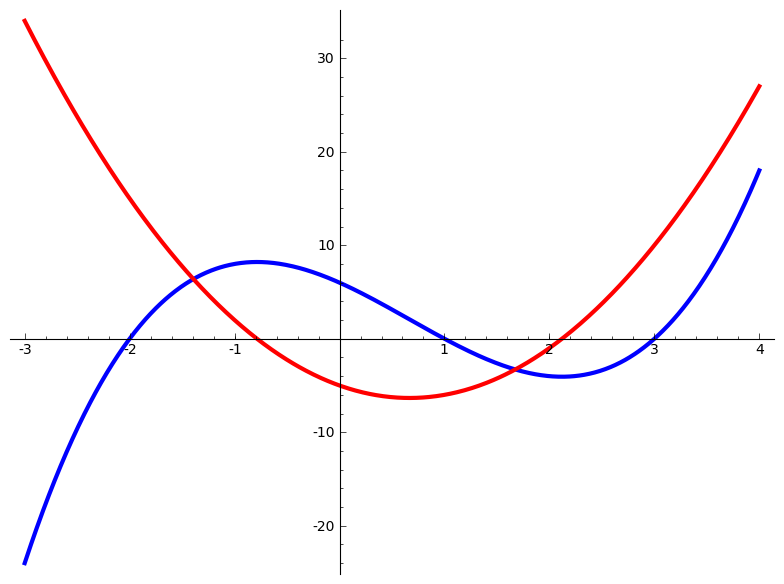
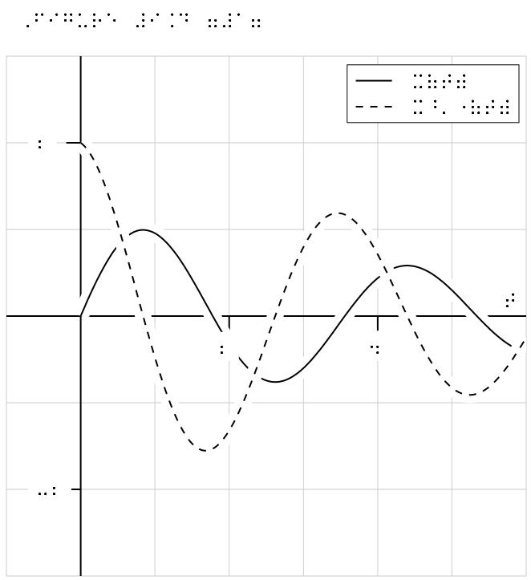
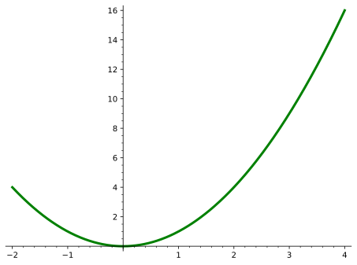
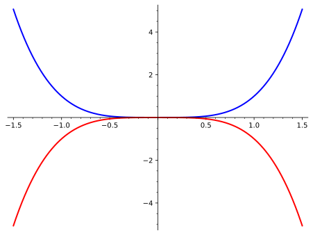
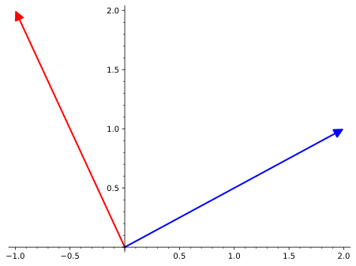
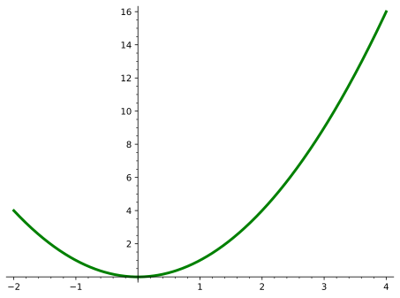
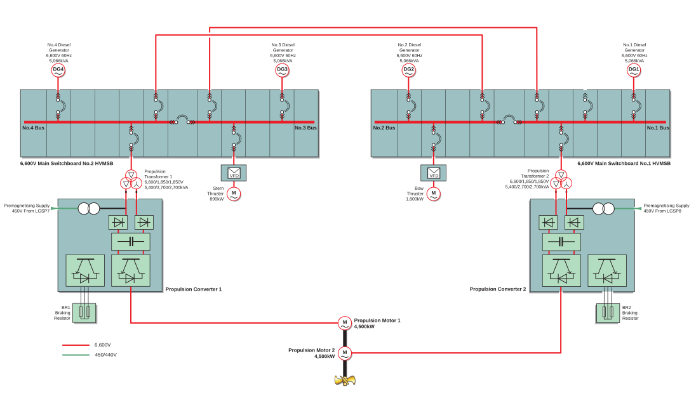

Theorem 2.1. The Fundamental Theorem of Calculus.
If \(f(x)\) is continuous, and the derivative of \(F(x)\) is \(f(x)\text{,}\) then
\begin{equation*}
\definiteintegral{a}{b}{f(x)}{x}=F(b)-F(a)
\end{equation*}
pretextbook.org[provisional cross-reference: some textbook about the FTC] or we might want to reference a later [provisional cross-reference: chapter about DiffEq's, and an_underscore].
todo, and selectively display them, so you may not see the one here in the output you are looking at now. Or maybe you do see it?
doctest attribute, whose value mirrors the optional hash tags used in Sage doctests. Possible values are random, long time, not implemented, not tested, known bug, absolute, relative, and optional. The values absolute and relative refer to floating-point tolerances for equality and require a second attribute tolerance to specify a floating point value. The value optional refers to the test requiring that an optional Sage package be present. The name of that package should be provided in the package attribute.
doctest="random", and so is specified as unpredictable and not tested. But there is some “sample” output which will appear in the LaTeX version (and always be the same).
random() function stays between \(0\) and \(1\text{.}\) So we provide \(12.005\) as the expected answer, but test with an absolute tolerance of \(\epsilon=0.006\text{.}\)
R language, a popular open source language for statistics. As an author, you add the attribute language="r" to your sage element. (The default language is Sage, so you do not need to indicate that repeatedly.) Note that a language like R likes to use a “less than” character, <, special character in XML. You need to escape it by writing < as we have done in the source for this example. (See the discussion in Subsection 9.1.)
sage, gap, gp, html, maxima, octave, python, r, and singular.
R cell. Unfortunately, it seems Sage’s doctest facility cannot be used easily with code from other languages. In the source for this example, we have employed the XML escape sequence, < several times (see Subsection 9.1).
deSolve, ggplot2, pracma, survey, swirl, and tidyverse. This next example uses the ggplot library for both a data set and the plotting capabilities. Note the initial use of the library() function. This is a modified version of the “Bubble plot” example at Top 50 ggplot2 Visualizations —The Master Listr-statistics.co/Top50-Ggplot2-Visualizations-MasterList-R-Code.html<sage> element with no content will also create an empty Sage cell for the reader’s use, but now it will be specific to a particular language and linked to others of the same language. Run the R cell above that defines the variable ruth and then try typing summary(ruth) in the cell below.
type="invisible", which will never be shown to a reader, but which get doctested. Why do this? If some code produces an error, and you hope it is fixed someday, use an invisible block to raise the error. Once fixed, the doctest will fail, and you can adjust your commentary to suit. There is such a block right now, but you will need to go to the source to see it.
paragraphs if you want to give them a title, but no numbers, etc..
<objectives> element you are reading, and this is its introduction. This early section has really grown and tries to accomplish many things. Not all of them are listed here.
phrase-global form of the text. It should describe the objective as belonging to the section (rather than the objectives), since objectives are one-per-subdivision and are numbered based upon the containing division: Objective 1 of Section 4. For comparison this is the (forced) type-global cross-reference: Objective 4.1.
c is not known, so the next cell will cause an error.
<example>. The results there are restricted to the knowl. In other words, the scope of those cells is the knowl. So if you opened the example and executed the Sage cells there, or if you skipped the example entirely, the next cell should not “know” the values of those variables and will raise an error.
@direction attribute on a <case> element.
title, whose formatting and structure is entirely up to the author. This then becomes the text of a cross-reference, as well.
<case> (or any other element with a default title) did not always handle title-ending punctuation correctly. So we try an example title with a question mark.
@direction attribute on a <case> element. You should order the list of statements in the order that you would like to prove ``this statement implies the next.’’
@direction set to cycle in a stand-alone proof of our TFAE claim. If we include a @ref on the <proof> that points to the original claim, then the formatting of the markers on the statement list will be honored in our cases.
<ol> that creates the list below does not have @marker.@ref to the preceding claim.
@ref, and so the direction indicators get default markers.
title, as usual, but then has a statement, which is separate from the solution. Why did we implement an example in two ways?
<question>. Or similarly, as a <problem>. They behave identically to examples, such as the one preceding and are numbered along with theorems, examples. etc.
<p>.
<project> is very similar to a <question> or <problem>
0 then you will get consecutive numbers from the beginning of your book, starting with 1.
<exploration>. Other similar possibilities are <project>, <activity>, <task>, and <investigation>.
<rename> facility (Subsection 32.1).
prelude authored within the activity element, but visually just prior.
<hint> and an <answer> before the <solution>.
postlude authored within the activity element, but visually just after.
<remark>, <convention>, <note>, <observation> and <warning> are designed to hold very simple contents, with no additional structure (no proofs, no solutions, etc.).
html.knowl.remark processing switch.
<note> in a <biblio><note> in a <biblio>.<answer> for the Solutions.
<answer> for the Solutions.
statement, which is followed by more items. In interdum suscipit ullamcorper. Morbi sit amet malesuada augue, id vestibulum magna. Nulla blandit dui metus, malesuada mollis sapien ullamcorper sit amet. Nulla at neque nisi. Integer vel porta felis.
task element to structure its parts. You are reading the prelude now. The project has lots of nonsense words, so we can test spacing the nested items. In interdum suscipit ullamcorper. Morbi sit amet malesuada augue, id vestibulum magna. Nulla blandit dui metus, malesuada mollis sapien ullamcorper sit amet. Nulla at neque nisi. Integer vel porta felis.
statement, which is followed by more items. In interdum suscipit ullamcorper. Morbi sit amet malesuada augue, id vestibulum magna. Nulla blandit dui metus, malesuada mollis sapien ullamcorper sit amet. Nulla at neque nisi. Integer vel porta felis.
<paragraphs> with a <project> with an <answer>.<introduction>, perhaps for preparatory explanation.
$...$ or \(...\) delimiters, and inline AsciiMath using backticks `...` as delimiters. Here are some `gratuitous backticks` to check that AsciiMath is only active in the answers to reading questions.
<conclusion>.
<answer> for the Solutions.
<answer> for the Solutions.
<theorem>, <corollary>, <lemma>, <algorithm>, <proposition>, <claim>, <fact>, and <identity>, all behave exactly the same, requiring a statement (as a sequence of paragraphs) followed by an optional proof, and may have an optional title. The elements <axiom>, <conjecture>, <principle>, <heuristic>, <hypothesis>, and <assumption> are functionally the same, barring a proof (since they would never have one!). Definitions are an exception, as it is natural to place <notation> within—see the source for Definition 2.2 for an example.
CDATA mechanism. But the real value is that there is just one version to edit, and any changes will be reflected in both copies. We demonstrate this in the sample book, since it has the xinclude mechanism in place. In the chapter on groups, find the section on Sage and then find the discussion of subgroups, and you will find an example of two identical Sage cells produced from one source file.
@auto-evaluate attribute to yes. The resulting cell will not have a button for evaluation (so editing it would be pointless). See the source of this sample article for the two examples below.
sage.
python.
paragraphs element.
paragraphs element, so should seem related to its title, but distinct from the two paragraphs in the grouping with the title “Structure” immediately prior.
<assemblage> is a collection, or summary, that does not have much structure to it. So you are limited to paragraphs and friends (p, blockquote, pre) and side-by-sides that do not contain captioned items (sidebyside, sbsgroup). The intent is that contents are not numbered, so cannot be cross-referenced individually, and so also do not become knowls. You may place <image>, <tabular>, and <program> inside a <sidebyside>, in addition to other objects that do not have captions. Note that p may by extension contain lists (ol, ul, dl). Despite limited structure, the presentation should draw attention to it, because the contents should be seen as more important in some way. It should be “highlighted” in some manner. If you need to connect the entire assemblage with material elsewhere, you can do that with the usual xref/xml:id mechanism.
| A | B | C |
| Uno | Dos | Tres |
assemblage with no title, simply to make sure the surrounding box behaves properly, especially for LaTeX output.
<introduction> that precedes subsequent further subdivisions. You are reading one now. They are always leaves of the document structure, so are rendered on some pages that reference the following subdivisions.
<exercises> division which must be at the level of a Subsubsubsection.
<conclusion> that follows previous further subdivisions. You are reading one now. They are always leaves of the document structure, so are rendered on some pages that reference the preceding subdivisions.
<em> or if you want to take it to the next level you can identify the text as an alert with <alert>.
<insert> or as <delete>. Note that these identified edits are slightly different than <stale>. The original request for stale text came from an instructor with an online list of student topics for presentations, and as students claimed topics they were marked as no longer available for other students.
<fillin> element that defaults to roughly a 10-character width. You can use the @characters attribute to make the rule longer or shorter, such as a 40-character blank: . The character count is approximate, based on typical character widths within a proportional font carrying English language text. Adjust to suit, or request a language-specific adjustment if it is critical.
<fillin> appear right at the start of the second line in print and then the next paragraph has nothing but a <fillin>. Both are for testing purposes.
<fillin> with @rows and/or @cols attributes (at least one of which is greater than 1): (2 × 1 array), (1 × 3 array), (2 × 3 array).
<tag>, <tage>, <attr>. Examples of how these render are (respectively): <section>, <hash/>, @width. Perhaps this document will make greater use of these tags.
[provisional cross-reference: a first incomplete cross-reference], [provisional cross-reference: a second incomplete cross-reference].
type-global form of the text. It should describe the outcome as belonging to the section (rather than the outcomes), since outcomes are one-per-subdivision and are numbered based upon the containing division: Outcome 2 of Section 4. For comparison this is the (forced) type-global cross-reference: Outcome 4.2.
<outcomes> element you are reading, and this is its introduction. This early section has really grown and we have tried to accomplish many things. Not all of them are listed here.

<idx> and a <notation>, adjacent, but separated by some whitespace in the authored source. That insignificant whitespace will be removed akways, which will be a (slightly) noticeable improvement in the LaTeX output. We test referencing notation here, placed before the sentence-ending period and right after some inline mathematics—for \(\mathbb{Z}_n\).intertext portion for testing.example.com and internal cross-reference to Corollary 4.1. And so it follows that,<table> to actually be a “subtable”, which exposes a bug provoked by Emiliano Vega and fixed around 2020-08-06. (So we have to place this early to create the same behavior that exposed the bug.)
| \(i\) | \(t_i\) | \(x_i\) | \(y_i\) |
| 0 | 0.00 | 0.0000 | 0.5000 |
| 1 | 0.20 | 0.1000 | 0.4800 |
| 2 | 0.40 | 0.1960 | 0.4560 |
| 3 | 0.60 | 0.2872 | 0.4295 |
| 4 | 0.80 | 0.3731 | 0.4027 |
| 5 | 1.00 | 0.4536 | 0.3783 |
| 6 | 1.20 | 0.5293 | 0.3591 |
| 7 | 1.40 | 0.6011 | 0.3480 |
| 8 | 1.60 | 0.6707 | 0.3474 |
| 9 | 1.80 | 0.7402 | 0.3603 |
| 10 | 2.00 | 0.8123 | 0.3900 |
AMSsymbols library.
www.mathjax.org/demos/tex-samples/extpfeil. As of 2023-10-19 this has become an author election (see the <docinfo> section in the source of this document). We preeserve a small test that this extensible arrows library is being included properly:\sfrac{}{} macro in your mathematics to achieve this presentation. The presentation in HTML is subpar, but could improve as MathJax provides support. It is now an author’s responsibility to add support for superior typesetting for PDF output by loading the xfrac LaTeX package with the following in <docinfo>:<math-package latex-name="xfrac" mathjax-name=""/>
xml:id on each. We reference the whole system later as the range of equations from the first to the last.md tag (“math display”), and the variant that produces numbers on each line, mdn (“math display numbered”), used within a paragraph (p). As a good example of how XML syntax is superior, you author \(n\) lines of equations by enclosing each line inside of a mrow tag, rather than using \(n-1\) separators (such as \\).
gather environment. Example:\amp as one way specify these, but the escape sequence & may be used also. The second, fourth, sixth, … ampersands separate columns, and the spacing between columns will be provided automatically. The first, third, fifth, … ampersands are alignment points for the equations in each column. Typically this is placed just prior to a binary operator, such as an equal sign (\amp = ), or for a column of explanations or commentary, just prior to the \text{} macro. Note that this scenario suggests always having an odd number of ampersands in each mrow. In the example below, alignment is on the equals sign in the first two columns, and provides left-justification to the explanations in the third column. N.B.: the use below of the \text{} macro does not include mathematics within its argument. Doing so may yield unpredictable results depending on your choice of delimiters for the mathematics (and using an m tag will be ineffective).@alignment attribute can override automatic detection. We use a simple LaTeX macro to demonstrate setting alignment='align' to override the use of a gather environment and use a align environment instead. Example:alignat environment is a third variant of alignment. It never happens automatically, you need to ask for it with alignment="alignat". It is very similar to align but adds no space between the equation columns. So you can leave it that way, or you can add your own “extra” space to suit. Here is a previous example with no inter-column space:mrow with the greatest number of ampersands (and how many there are),alignat-columns. This is the number of columns not the number of ampersands. Generally, for \(c\) columns, there will be \(2c-1\) ampersands.alignat option to advantage by not including any extra space. This example is modified slightly from a post by Alex Jordan:md or mdn to go back to the AMSmath default behavior and not break at all. Ever. Or rather, go further and modify an individual mrow to suggest that it is a good place for a break.
cancel and is included in the TeXLive distribution, so is fairly standard. The particular macro being demonstrated is \cancelto{}{}.<math-package> element within the <docinfo> section. That is the only setup required to make the macro usable in LaTeX and HTML output.\text{} macro is supported. For example, you might use an “if” or an “otherwise” in the definition of a piecewise function.
\text{} macro. In HTML output we have taken care that the font for text material within display mathematics should match the font of the surrounding paragraph, as also happens with LaTeX output. The second line is nearly identical in the source, but is just naked text being rendered like a slew of variables.\text{} macro to achieve certain effects. Note the Unicode left and right smart quotes. This a contribution from Alex Jordan as part of his work on APEX Calculus.\mathord{} and \mathrel{} macros to control spacing around the mathematical symbols. Examine the source to see how the quotation marks have been authored with XML syntax for Unicode characters, since we do not allow most markup inside mathematics.xref element which you might want to use to provide justifications for the steps of a derivation. Here is a visual example that is mathematically meaningless,\overset and \underset macros wrapping a PreTeXt <xref>, with and without content, inside an <me> element. Note that \stackrel is obsolete, and \overunderset is not yet supported by MathJax (but see GitHub #2704github.com/mathjax/MathJax/issues/2704<xref> with @text set to global) since if you stick to elements like <theorem>, <lemma>, <definition>, or <axiom>, then the numbers will be unambiguous and the target of the cross-reference will contain full information. But note that if you mix in divisions, or perhaps figures, as reasons then there is a possibility that numbers will need to be qualified by their type. We have provided an abbreviation for one cross-reference to Theorem 2.1 (which will not benefit from automatic translation to other languages).example or a proof. For this situation you can create, and employ, a “local” tag on a displayed equation. Nothing enforces the idea of what constitutes local, and there is nothing to stop you from using the same symbols more than once. With freedom comes responsibility.
@tag attribute on an mrow, only. (Remember, you can have just one mrow.) The behavior is identical within an md or mdn. The value of the @tag attribute is a symbol name. The prefix d means “double”, and the prefix t means “triple”. So allowed values arestar, dstar, tstar dagger, ddagger, tdagger daggerdbl, ddaggerdbl, tdaggerdbl hash, dhash, thash maltese, dmaltese, tmaltese
<me> element start with \begin{CD}. Remember to escape the less-than character.defd4bffd462e7ea).
sin x | <m>\sin x</m> | <m>\text{sin}\ x</m> | <m>\mathrm{sin}\ x</m> |
<m>\text{sin}x</m> | <m>sin x</m> | sin x
\sin. Note the distance to the \(x\text{.}\)
\text{} macro.\mathrm{} macro. Not recommended for PreTeXt.groups.google.com/g/mathjax-users/c/ANjLK9KtcWA/m/vlHaPja-AwAJNOT has been moved to a superscript:<remark>.
<convention>.
<note>.
<observation>.
<warning>.
<insight>.
<example>.
<example>.
<example>.
<conclusion>.
<question>.
<problem>.
<observation>.
<warning>.
<insight>.
<theorem>.
<corollary>.
<lemma>.
<algorithm>.
<proposition>.
<claim>.
<fact>.
<identity>.
<axiom>.
<conjecture>.
<principle>.
<heuristic>.
<hypothesis>.
<assumption>.
<definition>.
<aside>s are below.
<computation>.
<technology>.
<data>.
<project>.
<activity>.
<exploration>.
<investigation>.
<assemblage>.
<conclusion>.
< in your source. Then the XML processor will know you want the character and will not mistake it for a tag. But now we want to get an ampersand into our source like: &. How? Another escaped version of a character, literally the five characters &.
Rather than pressing the < and & keys on your keyboard, instead always enter the escape sequences<and&as replacements.
<c> or <pre> elements), and mixed into LaTeX syntax to desribe mathematical expressions. XML has three other escape sequences >, ', and ", for the characters >, ’, and " (respectively). But they seem largely unnecessary for authoring in PreTeXt, as we now demonstrate by typing them directly from our keyboard into our source: >, ’, and ".
& authored? Work it out, and then check the source here for the answer.
<q> tag will provide beginning and ending double quotations, while the <sq> tag will behave similarly but provide single quotes. Given the complexity of quotations, the different symbols used in different languages, and the over-simplified versions provided on keyboards, it is necessary to use markup.
<blockquote> tag, which can carry within itself an <attribution> element.
The problem with writing a book in verse is, to be successful, it has to sound like you knocked it off on a rainy Friday afternoon. It has to sound easy. When you can do it, it helps tremendously because it’s a thing that forces kids to read on. You have this unconsummated feeling if you stop.―Dr. Seuss
The problem with writing a book in verse is, to be successful, it has to sound like you knocked it off on a rainy Friday afternoon. It has to sound easy. When you can do it, it helps tremendously because it’s a thing that forces kids to read on. You have this unconsummated feeling if you stop.―Dr. Seuss
Children’s Author
q and sq tags. The left/right versions are used for the following quote from Abraham Lincoln, which we have edited into two paragraphs.
<foreign> element may have a xml:lang attribute.
<angles> element when constructing a balanced pair. Similarly, <dblbrackets> is provided to make the double-bracket characters easily available, since they are likely not on your keyboard.
<c> element. One special consideration: if your editor splits a line in the middle, we will fix it. This sentence has two words that we purposely split with a “newline” character in the middle. In output you should see a space between the words.
' an apostrophe or a right single quote? We presume the former, ’, and provide markup as an alternative for the latter (described above). Is / used to separate words, or to form a fraction? We presume the former, /, and provide <solidus/>, ⁄, for the latter. We test some other characters straight from our US keyboard (with two being escape sequences).
~ ` ! @ # $ % ^ & * ( ) _ - + = [ ] { } | \ ; : ' " , < . > ? /
<dollar/>, <ampersand/>, or others in old source. They will be deprecated and will raise warnings.
latex-alive.tumblr.com/post/827168808| Tag | Realization | Meaning |
ad |
AD | anno Domini, in the year of the Lord |
am |
AM | ante meridiem, before midday |
bc |
BC | English, before Christ |
ca |
ca. | circa, about |
eg |
e.g. | exempli gratia, for example |
etal |
et al. | et alia, and others |
etc |
etc. | et caetera, and the rest |
ie |
i.e. | id est, in other words |
nb |
NB | nota bene, note well |
pm |
PM | post meridiem, after midday |
ps |
PS | post scriptum, after what has been written |
vs |
vs. | versus, against |
viz |
viz. | videlicet, namely |
none or thin to control this.
₱. This table has been tested with our default fonts, and should be fine for HTML output. Please report any difficulties with different LaTeX fonts, as there are extra measures we can take to make these more robust. (We’ve already done this for the Paraguayan guaraní.)
| Sign | Unicode | Name |
| $ | U+0024 |
dollar |
| ¢ | U+00A2 |
cent |
| £ | U+00A3 |
sterling |
| ¤ | U+00A4 |
currency |
| ¥ | U+00A5 |
yen |
| ƒ | U+0192 |
florin |
| ฿ | U+0E3F |
baht |
| ₡ | U+20A1 |
colon |
| ₤ | U+20A4 |
lira |
| ₦ | U+20A6 |
naira |
| ₩ | U+20A9 |
won |
| ₫ | U+20AB |
dong |
| € | U+20AC |
euro |
| ₱ | U+20B1 |
peso |
| ₲ | U+20B2 |
guarani |
<icon/> and the attribute is @name.
| Name | Icon | Name | Icon | Name | Icon |
arrow-down |
arrow-left |
arrow-right |
|||
arrow-up |
file-save |
gear |
|||
menu |
wrench |
| Name | Icon | Name | Icon | Name | Icon |
cc |
cc-by |
cc-sa |
|||
cc-nc |
cc-pd |
cc-zero |
fontawesome5 package.xelatex, and Fonts.
xelatex the Font Awesome 5 icons are expected to be in a system font whose name is Font Awesome 5 Free. This is not a filename, and installing the LaTeX fontawesome5 package into your LaTeX installation does not always guarantee that this font will automatically be available as a system font.
fontawesome5 package as a vehicle for installing and accessing these fonts.
<kbd> element, with the label of the key as content.
<kbd> element, while the named column means the symbol/character has been chosen via the value of the @name attribute of an empty <kbd/> element.
| Literal | Named | |
| Ampersand | & | & |
| Less than | < | < |
| Greater than | > | > |
| Dollar | $ | $ |
| Per cent | % | % |
| Open brace | { | { |
| Close brace | } | } |
| Hash | # | # |
| Backslash | \ | \ |
| Tilde | ~ | ~ |
| Circumflex | ^ | ^ |
| Underscore | _ | _ |
| ~ | ! | @ | # | $ | % | ^ | & | * | ( | ) | _ | + | |
| Tab | Q | W | E | R | T | Y | U | I | O | P | { | } | | |
| CapsLock | A | S | D | F | G | H | J | K | L | : | ' | Enter | |
| Shift | Z | X | C | V | B | N | M | < | > | ? | Shift |
| ` | 1 | 2 | 3 | 4 | 5 | 6 | 7 | 8 | 9 | 0 | - | = | |
| Tab | q | w | e | r | t | y | u | i | o | p | [ | ] | \ |
| CapsLock | a | s | d | f | g | h | j | k | l | ; | ' | Enter | |
| Shift | z | x | c | v | b | n | m | , | . | / | Shift |
http://example.com
<url> element can be used to create an external reference. The mandatory @href attribute is the actual URL complete with the protocol (e.g. https://). Content for the element is optional, and if provided will be the “clickable” text. In this case, a @visual attribute can be provided, and this will become a footnote with a more friendly version of the URL. When no content is provided, the “clickable” will be the URL with a preference for an optional @visual. This subsection has some (extreme) tests and we leave complete documentation and full details for the PreTeXt Guide.
www.pcc.edu/enroll/registration/dropping.html#withdraw. Notice in the source that you do not put any tags inside the @href or @visual attributes, but you may need to provide XML escape sequences (see Subsection 9.1).
<url> element with content will get a footnote, by containing the (simplified) URL in the highly-recommended @visual attribute. If you do not provide the @visual attribute in this case, then you will get the @href value repeated, possibly with some editing. If you insist, you can make the @visual attribute identical to the @href attribute. Some tests:@visual attributeexample.com@visual attributehttp://example.com/@visual attributeexample.com/%) in a URL, we follow it by two hex digits, specifically, 58, which is a way to represent the character X in a URL. Normal text, monospace text, <url> with just @href, <url> with @href and @visual, <url> with @href, @visual and content. Notice how the various versions do, or do not, line-break in LaTeX/PDF output, including the (potentially confusing) use of a use of a hyphen in the normal text version
ABCDEFGHIJKLMNOPQRSTUVWXYZabcdefghijklmnopqrstuvwxyz0123456789%-._~:/?#[]@!$&’()*+,;=ABCDEFGHIJKLMNOPQRSTUVWXYZabcdefghijklmnopqrstuvwxyz0123456789%-._~:/?#[]@!$&'()*+,;=Characters to a footnote5
example.com/ABCDEFGHIJKLMNOPQRSTUVWXYZabcdefghijklmnopqrstuvwxyz0123456789%58-._~:/?#[]@!$&'()*+,;=
http://example.com/long/long/long/long/long/long/long/long/long/long/long/long/long/long/long/long/long/long/long/longer/longer/longer/longer/longer/longer/longer/longer/longer/longer/longer/longer/longer/longer/longer/longer/longer/longer/longer/longer/longer/longer/longer/longer/longer/longer/longer
en.wikipedia.org/wiki/Carleson%27s_theorem since the extra footnote and any visual will be squelched.en.wikipedia.org/wiki/Carleson%27s_theorem.
taxon element can be used all by itself to get an italicized scientific name, as in Escherichia coli. It can also be structured with the elements genus and species, as in using both together in Cyclops kolensis. Or the subelements can be used individually. Rules for capitalization are presently your responsibility as an author. Possible improvements include new subelements, attributes for database identifiers, and checks on capitalization. Also, we might automatically abbreviate the genus after first use.
@ncbi that you can use on the taxon element to precisely identify the organism you are discussing using an identification number from the National Center for Biotechnology Informationwww.ncbi.nlm.nih.govwww.ncbi.nlm.nih.gov/taxonomywww.ncbi.nlm.nih.gov/taxonomy. Right now, we do not do anything with this attribute, but things like links are certainly possible. See the source of this document to see it in use with Drosophila miranda which could be used to construct a link to further information via id numberwww.ncbi.nlm.nih.gov/Taxonomy/Browser/wwwtax.cgi?id=7229www.ncbi.nlm.nih.gov/Taxonomy/Browser/wwwtax.cgi?name=Drosophila+miranda\a&b#c%d~e{f}g$h_i^j, OK
<![CDATA[ ]]>. It should be possible to write without ever using the “CDATA” mechanism, but it might get tedious in places to use the supplied macros or XML escape sequences. This construction is often mis-understood as a solution better remedied by reading Subsection 9.1 again.
<code> elements require extraordinary care. But the one nut we cannot crack is pairs of dollar signs. So the next paragraph is known to render badly in a Jupyter notebook, but should otherwise be a bit boring.
# $ % ^ & _ { } ~ \.
X#X$X%X^X&X_X{X}X~X\X. (These verbatim versions are authored in different paragraphs to work around the Jupyter notebook bug described above.)
\textbackslash. (See? It just happened twice.) For technical reasons we want to particularly test \textbackslash, \textbraceleft, and \textbraceright.
--, ---, ``, and '', authored in running text, --, ---, ``, ’’. It may be hard to tell that the two consecutive apostrophes have not coalesced into a curly left smart quote, but see below, the spacing is subtly different.
", to not morph into some other character: " .
<ndash/> and <mdash/> for the longer dashes/hyphens.
<solidus/> character for super-simple text fractions like 7⁄32 (which will not line-break), and math elements or SI unit markup for technical work.

commons.wikimedia.orgcommons.wikimedia.org/wiki/File:NZ_Landscape_from_the_van.jpgpdf2svg works well for converting PDF to SVG. In this case, specify your source as a filename, but leave off the file extension, and the appropriate version will be used for the current output format.

www.texample.netprefigure.org). Its philosophy and approach are much like that of PreTeXt, and PreFigure is tightly integrated into PreTeXt. One key feature is excellent support for the creation of accessible output formats.
pretext/pretext script (see the PreTeXt Guide), and expect them to render in HTML, PDF, and EPUB output formats.<docinfo> and are employed to produce the names of some vectors in the labels. The blue line is colored blue by a global PreFigure declaration, also in <docinfo>.

pretext script produces SVG versions of the pictures. The script can also produce standalone TeX source files, PDFs, PNGs, and EPSs. The packages should be loaded in docinfo/latex-image-preamble, which is also where global package settings should be made. If any ampersands occur in your LaTeX code you should use the \amp macro pre-defined by PreTeXt. These first examples are from the TeXample.netwww.texample.net/tikz/examples/www.frontiernet.net/~eugene.ressler/docinfo/latex-image-preamble. Here, it is used. Also, here we demonstrate using \amp where you would normally use an ampersand in LaTeX. There are known issues with xelatex processing any gradient shading in tikz. To (successfully) create the gradient shading in the 3D image here, you may need to use pdflatex until LaTeX developers resolve this issue.
docinfo/directories/@data attribute of your source. But you must prefix the path with data/ as in the source below.
numerical/attack, so the image files (shark.png, swimmer.png) are prefixed in the TikZ code with data/attack so the creation of the image will be successful. This example is courtesy of Stephen Brown.
<description> with a <tabular> that lays bare the data used to to plot points.
| \(x\) | \(1\) | \(2\) | \(3\) | \(4\) | \(5\) | \(6\) | \(7\) | \(8\) | \(9\) |
|---|---|---|---|---|---|---|---|---|---|
| \(y\) | \(5\) | \(3\) | \(8\) | \(9\) | \(5\) | \(5\) | \(8\) | \(2\) | \(3\) |
pdflatex engine. But it will work easily with the xelatex engine. We try to keep this present sample document workable with both engines, so we have presented an example of the use of PSTricks in the xelatex-exclusive sample document where we test obscure fonts and characters. So your best bet is to look there.
\usepackage[pdf]{pstricks}
pdflatex --shell-escape *.tex
asymptote.sourceforge.net.
pretext script is evolving. Plus, you will need newer versions of Asymptote and the dvisvgm utility to duplicate all of the results being displayed here in this testing document. The other distinction is that the author needs to provide the aspect ratio of the figure, and this should be placed on the <asymptote> element (not on the <image> element). Figure 10.16 is from the Asymptote Galleryasymptote.sourceforge.net/gallery/3Dwebgl/| Key | Action |
| x | Rotate around \(x\)-axis |
| y | Rotate around \(y\)-axis |
| z | Rotate around \(z\)-axis |
| + | Enlarge image |
| - | Shrink image |
| h | Return to home position |
mermaid.js.orgmermaid.js.org/intro/#diagram-typesmermaid.live@common/mermaid/@theme
---
title: Example Git diagram
---
gitGraph
commit
commit
branch develop
checkout develop
commit
commit
checkout main
merge develop
commit
commit
classDiagram
Animal <|-- Duck
Animal <-- Fish
Animal <|-- Zebra
Animal : +int age
Animal : +String gender
Animal: +isMammal()
Animal: +mate()
class Duck{
+String beakColor
+swim()
+quack()
}
class Fish{
-int sizeInFeet
-canEat()
}
class Zebra{
+bool is_wild
+run()
}
sequenceDiagram
participant Alice
participant Bob
Alice->>John: Hello John, how are you?
loop HealthCheck
John->>John: Fight against hypochondria
end
Note right of John: Rational thoughts <br/>prevail!
John-->>Alice: Great!
John->>Bob: How about you?
Bob-->>John: Jolly good!
Graphics object (or 3D plot). The pretext script will isolate this last line, use it as the RHS of an assignment statement, and the Sage .save() method will be called to generate the image, which is either a Portable Document Format (PDF) file amenable to LaTeX output, or a Scalable Vector Graphics (SVG) file amenable to HTML output. For visualizations of 3D plots, Sage will only produce Portable Network Graphics (PNG) files, which can be included in HTML pages or LaTeX output. For complete documentation, see the PreTeXt Guide as this subsection is not comprehensive.

show() might appear to do the right thing, it evaluates to Python’s None object and that is just what you will get. The code for Figure 10.23 illustrates creating two graphics objects and combining them into an expression on the last line that evaluates to a graphics object.


www.sagemath.org/tour-graphics.htmlsidebyside layout element, see Section 26.
plot_points=100 in the Sage code, you will get a very smooth rendering, but also a quite large HTML file. We have used plot_points=50 to reduce the file size by a factor of four. Note the need for a value of 3d for the @variant attribute, and an explicit aspect ratio with @aspect. Arrow keys, a mouse scroll wheel, plus grabbing with a left or a right mouse button, can be used to manipulate the image.inkscape.org

<latex-image> element, this is a bit subtler. See the PreTeXt Guide for a complete description. We also demonstrate this with the sample book, since it is all set up with the xinclude mechanism. See the two plots of the 8-th roots of unity in the complex numbers section of the chapter on cyclic groups.
pretextbook.org or PreTeXtpretextbook.org<figure>, as we have done above, so that you can reference them, and use the (required) <caption> to explain what they are. However there are places, such as a <preface>, where numbered items are not permitted. So you might want a solo image there. Or maybe graphics are an illustration of sorts, and a numbered figure feels like overkill. Or it is part of an <exercise> or <proof> of a <theorem>. But notice that you cannot then use this image as the target of a cross-reference, so you may need to refer to some enclosing container.
@width as a percentage, including the percent-sign (%). The height is scaled to preserve the aspect ratio. There is no facility to change the height, it is your responsibility to manage the aspect ratio independently. The @margins can be given as a pair of percentages, separated by a space. The @width defaults to 100%, while @margins defaults to the value auto, which will center the image. Missing values are computed sensibly, and there is robust error-checking. The layout control here is a subset of what is available for the more elaborate <sidebyside> element, see Section 26.
10% and so defaults to being centered, and the second has width 10% and left margin of 25%.
margins attribute as a pair of percentages for different left and right margins. The following are laid out with two margins, with a 0% left margin and right margin (respectively).
tikz image recycled from above, now 40% width, with 40% left margin, 20% right margin.
pgfplot image recycled from above, now 20% width, with 40% left margin, 40% right margin, and no longer legible.

pretext. Images need to be placed relative to the LaTeX file that includes them during compilation, and placed relative to the HTML files which reference/include them. Author-provided image files may be placed in any subdirectory, and the @source attribute should include the complete relative path with the subdirectory. Files generated by the pretext script will be specified in the output using the relative directory images, which can be changed. There is no reason author-provided files cannot also be placed in this same directory (presuming no duplicate names). [This table is presently more readable in HTML, the PDF version will improve.]
| Element | Specification | LaTeX/Print | HTML | Notes |
image/@source |
full relative path, w/ extension | directly included | directly included | author-provided PNG, JPEG |
image/@source |
full relative path, w/o extension | presumes PDF | presumes SVG | author-provided |
image/latex-image-code |
LaTeX-compatible source | directly included |
SVG via pretext
|
e.g. tikz, pgfplots, xypic |
image/sageplot |
Sage code |
PDF via pretext
|
SVG via pretext
|
PNG for 3-D |
image/asymptote |
Asymptote code |
PDF via pretext
|
SVG via pretext
|
pretext under version control, and just regenerate them periodically (see the -r option for pretext). As a project matures, then it makes sense to put stable files under version control for collaborators and others. In every case, managing graphics files (and other aspects of production), is much more pleasurable with a script (shell, Makefile, etc.)
<image> should either have a non-empty <description>, a non-empty <shortdescription>, or set @decorative to the value yes. Some of the following images comply, and some do not. There’s not really anything to see here visually, this is testing notifications made elsewhere.
<exercisegroup> is meant to hold a collection of (short) exercises with common, shared, instructions. Do not use this structure to subdivide an <exercises> division, as you will eventually be disappointed. Instead, use the available, but under development as of 2019-11-02, <subexercises>, which requires a <title>.
introduction for the exercisegroup.
phrase-global form, the common element of the cross-reference and the target should be the exercises division, and not the enclosing exercisegroup: Exercise 3 of Exercises 11.2.
<exercisegroup> has a title and no <introduction>, which once resulted in some aberrant formatting in LaTeX output.
<introduction>
phrase-global form, the common element of the cross-reference and the target should be the exercises division, and not the enclosing exercisegroup: Exercise 3 of Exercises 11.2.
@characters attribute for a fillin inside math: \(1+\fillinmath{XXXXX}+4=10\text{,}\) which may be more convenient, but may not side properly in places like subscripts, superscripts, fractions, limits of integrals, and so on.
<exercisegroup> can have a cols attribute taking a value from 2–6. Exercises will progress by row, in so many columns. On a small screen, the HTML exercises may reorganize into fewer columns.
| \(x\) | \(f(x)\) |
|---|---|
| \(0\) | \(0\) |
| \(1\) | \(1\) |
| \(2\) | \(4\) |
| \(3\) | \(9\) |
ol to make an ordered list, and ul to make an unordered (bulleted) list. In both cases, use li for each entry. If an entry contains more than one paragraph, then each must be wrapped in p.
p) for the list items of the list of colors.
<p> element.xml:id and then may be the target of an xref. We test three here, referencing down into the hierarchy above. Level 1, second: 2. Level 3, second: 2.b.ii. Level 4, third: 2.b.ii.C. Note that if a list item of an ordered list is contained within a list item of an unordered list, then its number will not be defined.
en.wikipedia.org/wiki/WebKit@label attribute, instead of numeral one.\displaystyle command. However, it would be nice if a list item containing only math used display mode by default.
p
list.
m tag inline with the li tag.
p, first inline, and then after a line break.
\displaystyle added automatically.<cd> element is used with indentation, which is likely superfluous inside a list item that is already being indented. Here we test lone <cd> elements inside of list items in various configurations.
Foo Bar Foo Bar Foo Bar
<cd> in the middle which should be indented some to indicate its participation in the paragraph.Foo Bar Foo Bar Bar Foo Bar Foo
<cd> in the middle which should be indented some to indicate its participation in the paragraph.Foo Bar Foo Bar Bar Foo Bar Foo
First inner item, cd only Foo Bar Foo Bar Bar Foo Bar Foo
Third inner item, cd only Foo Bar Foo Foo Bar Foo Bar Foo Bar
cd inside second item, outer level Bar Bar Foo Bar Foo
dl to make a description list. Inside of those tags, use li for each entry. Then, use title to specify the term being described and p to specify the description.
term tag which just makes a term prominent in a sentence, and a definition, which is set off, has a heading, a number, and a title. Do not try to manage the separation between the title and the description by employing punctuation (but you can include a question-mark or exclamation-point if necessary). For example, do not include a colon to the end of the title. This example is from Bob Plantz.width attribute on a dl element with possible values narrow and medium. The value refers (somewhat confusingly) to the distance between the left margin and the description. The default is medium, which is illustrated above. Conversion to LaTeX ignores the attribute. An example with narrow:#568203, and also the main ingredient in guacamole.
#702963, and also an ancient Greek city which later became known as Constantinople, and today is called Istanbul.
main() is a void function
<list> element, so that it earns a number, can be given a title and have an introduction and conclusion. Cross-references to individual list items get a bit involved as they are prefixed with the number of the list and then the number of the item, so conceivably you could get a number like 4.5.3:2.a.ii. The colon is used to indicate the transition from the number of the list within divisions and the numbers coming from the list hierarchy, since it has two small dots.
<introduction> to this list, an immediately following, but outside the <list>.global): Item 12.4:B.c
hybrid): Item B.c
local): Item B.c
@text attribute: Item 12.4:B.c.
p element of its own.| 1111, 2222 | 3333 | |
| aaaa | bbbb,cccc | |
| AAAA | BBBB | CCCC |
table first. Default LaTeX aligns it vertically above the exercise number. Placement here tests correcting that alignment.
| Red | Green1Green can be a very sick looking color. |
Yellow |
| Blue | White | Pink |
www.latex-tables.comlatex-tables.comand then exported in PreTeXt syntax.
<tabular>. The division lines are slightly thicker than the subtraction lines. This is a good example of the typical abuse of tables for horizontal and vertical layout. At least we have called it a “Figure,” not a “Table”.
| \(x\) | \(-\) | \(5\) | |||||
| \(x\) | \(+\) | \(2\) | \(x^2\) | \(-\) | \(3x\) | \(-\) | \(8\) |
| \(x^2\) | \(+\) | \(2x\) | |||||
| \(-5x\) | \(-\) | \(8\) | |||||
| \(-5x\) | \(-\) | \(10\) | |||||
| \(2\) |
| 1234567890 | 1234567890 | 1234567890 | 1234567890 |
| [First | Second | Third | Fourth |
| A | B | C | D |
| 1 | 2 | 3 | 4 |
| 1234567890 | 1234567890 | 1234567890 | 1234567890 |
| First | Second | Third | Fourth |
| A | B | C | D |
| 1 | 2 | 3 | 4 |
| 1 | 2 | 3 | 4 |
<tabular> and place it directly within the current division. This will allow control over the horizontal placment, but without a caption, there is no number, and the tabular cannot be cross-referenced.
| One |
| 1234567890 | 1234567890 | 1234567890 | 1234567890 |
| First | Second | Third | Fourth |
| A | B | C | D |
| 1 | 2 | 3 | 4 |
| 1 | 2 | 3 | 4 |
| 1111 | 2222 | 3333 |
| aaaa | bbbb | cccc |
| AAAA | BBBB | CCCC |
| 1111, 2222 | 3333 | |
| aaaa | bbbb,cccc | |
| AAAA | BBBB | CCCC |
\leavevmode is necessary to keep this organized (item number, then table as content).
col Elements, Nine Columns| 1 | 2+3 | 4 | 5+6+7 | 8+9 | ||||
| 1 | 2 | 3 | 4 | 5 | 6 | 7+8 | 9 | |
| 1 | 2 | 3 | 4 | 5 | 6 | 7 | 8 | 9 |
colspan attributes.
| One |
<p> children. And such cells should only have <p> children. The width of a paragraph cell is determined by a width attribute on the corresponding <col> (as a percentage). If the column has a non-paragraph cell with contents that are wider than the paragraph cells, results will be undesirable. There is presently no implementation for a paragraph cell that has a colspan greater than \(1\text{,}\) although cells with colspan greater than \(1\) that are above or below a paragraph cell will behave. Setting width on a <col> that has no paragraph cells may produce unexpected results. A valign for the parent <row> (or the ambient <tabular>) can control vertical alignment (top, middle, or bottom). A paragraph cell’s halign attribute (left, center, right, or justify) controls how the text is justfied. Cells inherit halign from <row>, <col>, and <tabular> in that order of preference. In a non-paragraph cell where halign='justify', the horizontal alignment will match the behavior of halign='left'.
| Unit | Stands For | Definition | Roughly |
| s | second |
the duration of 9192631770 periods of the radiation corresponding to the transition between the two hyperfine levels of the ground state of the cesium-133 atom
an extraneous paragraph just to demonstrate the inter-paragraph formatting.
|
the time it takes you to say the phrase “differential calculus”
|
| min | minute | exactly \(60\) seconds
|
how long it takes to microwave a full dinner plate from the refrigerator
|
| h | hour | the length of one episode of a premium cable television show
|
<line> elements. This is not the same thing as a paragraph cell—line breaking will happen precisely where the author tells it to. A <line> will not break, even on a narrow screen. If a cell uses a <line>, it must only use a sequence of <line>s and no other content. As with paragraph cells, you can use a valign attribute for the row.
| One Fish Two Fish Red Fish Blue Fish |
I am the Lorax. I speak for the trees. Self-referential: Table 13.13 |
Look at me! Look at me! Look at me NOW! It is fun to have fun. But you have to know how. |
halign, valign, colspan, <p> children, and <line> children.
| Cell too wide | ||||||||
| Lf md | Lef mid par cel
|
Rt md | Rig mid par cel
|
Cn md | Cen mid par cel
|
Js md | Jus mid par cel jus mid par cel
|
|
| Colspan=2 lef mid with lines |
Colspan=3 rig mid | Lines Between Par |
Lines Between No Par |
Par in row with lines
|
|
|||
| L t | Lef top par cel
|
R t | Rig top par cel
|
C t | Cen top par cel
|
J t | Jus top par cel jus top par cel
|
|
| L b | Lef bot par cel
|
R b | Rig bot par cel
|
C b | Cen bot par cel
|
J b | Jus bot par cel jus bot par cel
|
|
| Colspan=3 lef bot | Colspan=2 rig bot with lines |
Lines Under Par |
Lines Under No Par |
Par in row with lines
|
|
|||
<sidebyside> with a <table> and a <tabular> to check that width is scaled appropriately. See Section 26 to learn about <sidebyside>s.
| A1.S1 |
All legislative Powers herein granted shall be vested in a Congress of the United States, which shall consist of a Senate and House of Representatives.
Should be 50% of 45% except perhaps on small screens.
|
| A1.S2.C1 |
The House of Representatives shall be composed of Members chosen every second Year by the People of the several States, and the Electors in each State shall have the Qualifications requisite for Electors of the most numerous Branch of the State Legislature.
Should be 50% of 55% except perhaps on small screens.
|
\multicolumn macro to override more global alignment settings, and to spread the content of one cell across several columns. However, sometimes LaTeX’s special characters have behaved badly in this situation. So the table below, two items per row, is just designed for LaTeX testing. But of course, it should still render fine in other formats. The three test cases are from 9.8, but without 50 alphabetic characters and 8 digits, which should not be problems in this context. In order to test the use of a percent sign (%) in a URL, we follow it by two hex digits, specifically, 58, which is a way to represent the character X in a URL. The first column’s entries are forced to be wrapped in a \multicolumn by specifying their horizontal alignment. The second column’s entries will not be wrapped in a \multicolumn. So the two columns will look identical, other than the first having a left alignment, and the second has the default center alignment. (This table is known to render poorly in a Jupyter notebook. The cause is four dollar signs present in rows 1 and 3, and is explained in Subsection 9.12.)
| 1 | 09az%-._~:/?#[]@!$&'()*+,;= |
09az%-._~:/?#[]@!$&'()*+,;= |
| 2 |
e.com/09az%58-._~:/?#[]@!$&’()*+,;=3example.com/09az%58-._~:/?#[]@!$&'()*+,;= |
e.com/09az%58-._~:/?#[]@!$&’()*+,;=4example.com/09az%58-._~:/?#[]@!$&'()*+,;= |
| 3 | example.com/09az%58-._~:/?#[]@!$&'()*+,;= |
example.com/09az%58-._~:/?#[]@!$&'()*+,;= |
| State | Population | Area (sq. mi.) | Statehood (Year) |
| Washington | 7,614,893 | 71,362 | 1889 |
| Oregon | 4,217,737 | 98,381 | 1859 |
| California | 39,512,223 | 163,696 | 1850 |
| State | Population | Area (sq. mi.) | Statehood (Year) |
|---|---|---|---|
| Washington | 7,614,893 | 71,362 | 1889 |
| Oregon | 4,217,737 | 98,381 | 1859 |
| California | 39,512,223 | 163,696 | 1850 |
| State | Population | Area (sq. mi.) |
Statehood (Year) |
|---|---|---|---|
| Washington | 7,614,893 | 71,362 | 1889 |
| Oregon | 4,217,737 | 98,381 | 1859 |
| California | 39,512,223 | 163,696 | 1850 |
| State | Population | Area | Statehood |
|---|---|---|---|
| (sq. mi.) | (Year) | ||
| Washington | 7,614,893 | 71,362 | 1889 |
| Oregon | 4,217,737 | 98,381 | 1859 |
| California | 39,512,223 | 163,696 | 1850 |
| State | Population | Area (sq. mi.) | Statehood (Year) |
|---|---|---|---|
| Washington | 7,614,893 | 71,362 | 1889 |
| Oregon | 4,217,737 | 98,381 | 1859 |
| California | 39,512,223 | 163,696 | 1850 |
| State | Population | Area (sq. mi.) |
Statehood (Year) |
|---|---|---|---|
| Washington | 7,614,893 | 71,362 | 1889 |
| Oregon | 4,217,737 | 98,381 | 1859 |
| California | 39,512,223 | 163,696 | 1850 |
| State | Population | Area | Statehood |
|---|---|---|---|
| (sq. mi.) | (Year) | ||
| Washington | 7,614,893 | 71,362 | 1889 |
| Oregon | 4,217,737 | 98,381 | 1859 |
| California | 39,512,223 | 163,696 | 1850 |
| State | Population | Area (sq. mi.) | Statehood (Year) |
|---|---|---|---|
| Washington | 7,614,893 | 71,362 | 1889 |
| Oregon | 4,217,737 | 98,381 | 1859 |
| California | 39,512,223 | 163,696 | 1850 |
| State | Population | Area (sq. mi.) |
Statehood (Year) |
|---|---|---|---|
| Washington | 7,614,893 | 71,362 | 1889 |
| Oregon | 4,217,737 | 98,381 | 1859 |
| California | 39,512,223 | 163,696 | 1850 |
| State | Population | Area | Statehood |
|---|---|---|---|
| (sq. mi.) | (Year) | ||
| Washington | 7,614,893 | 71,362 | 1889 |
| Oregon | 4,217,737 | 98,381 | 1859 |
| California | 39,512,223 | 163,696 | 1850 |
| Red | Green | Yellow |
| Blue | White | Pink |
| Red | Green | Yellow |
| Blue | White | Pink |
| Red | Green | Yellow |
| Blue | White | Pink |
| Red | Green | Yellow |
| Blue | White | Pink |
| Red | Green | Yellow |
| Blue | White | Pink |
| Red | Green | Yellow |
| Blue | White | Pink |
| Red | Green | Yellow |
| Blue | White | Pink |
| Red | Green | Yellow |
| Blue | White | Pink |
| Red | Green | Yellow |
| Blue | White | Pink |
| Red | Green | Yellow |
| Blue | White | Pink |
| Red | Green | Yellow |
| Blue | White | Pink |
| Red | Green | Yellow |
| Blue | White | Pink |
| Red | Green | Yellow |
| Blue | White | Pink |
| Red | Green | Yellow |
| Blue | White | Pink |
| Red | Green | Yellow |
| Blue | White | Pink |
| Red | Green | Yellow |
| Blue | White | Pink |
| Red | Green | Yellow |
| Blue | White | Pink |
| Red | Green | Yellow |
| Blue | White | Pink |
| Red | Green | Yellow |
| Blue | White | Pink |
| Red | Green | Yellow |
| Blue | White | Pink |
| Red | Green | Yellow |
| Blue | White | Pink |
| Red | Green | Yellow |
| Blue | White | Pink |
| Red | Green | Yellow |
| Blue | White | Pink |
| Red | Green | Yellow |
| Blue | White | Pink |
| Red | Green | Yellow |
| Blue | White | Pink |
| Red | Green | Yellow |
| Blue | White | Pink |
| Red | Green | Yellow |
| Blue | White | Pink |
| Red | Green | Yellow |
| Blue | White | Pink |
<tabular>, but within a <table>. Behavior should be similar, a new page and then it overruns the bottom of the page.
| Red | Green | Yellow |
| Blue | White | Pink |
| Red | Green | Yellow |
| Blue | White | Pink |
| Red | Green | Yellow |
| Blue | White | Pink |
| Red | Green | Yellow |
| Blue | White | Pink |
| Red | Green | Yellow |
| Blue | White | Pink |
| Red | Green | Yellow |
| Blue | White | Pink |
| Red | Green | Yellow |
| Blue | White | Pink |
| Red | Green | Yellow |
| Blue | White | Pink |
| Red | Green | Yellow |
| Blue | White | Pink |
| Red | Green | Yellow |
| Blue | White | Pink |
| Red | Green | Yellow |
| Blue | White | Pink |
| Red | Green | Yellow |
| Blue | White | Pink |
| Red | Green | Yellow |
| Blue | White | Pink |
| Red | Green | Yellow |
| Blue | White | Pink |
| Red | Green | Yellow |
| Blue | White | Pink |
| Red | Green | Yellow |
| Blue | White | Pink |
| Red | Green | Yellow |
| Blue | White | Pink |
| Red | Green | Yellow |
| Blue | White | Pink |
| Red | Green | Yellow |
| Blue | White | Pink |
| Red | Green | Yellow |
| Blue | White | Pink |
| Red | Green | Yellow |
| Blue | White | Pink |
| Red | Green | Yellow |
| Blue | White | Pink |
| Red | Green | Yellow |
| Blue | White | Pink |
| Red | Green | Yellow |
| Blue | White | Pink |
| Red | Green | Yellow |
| Blue | White | Pink |
| Red | Green | Yellow |
| Blue | White | Pink |
| Red | Green | Yellow |
| Blue | White | Pink |
| Red | Green | Yellow |
| Blue | White | Pink |
<tabular> to split itself at a page break, you can add the attribute @break with the value yes. Certainly this will control a <table> or <tabular> which is longer than a page, but will also allow a shorter one to break. This might useful in a draft stage before undertaking page-fitting.
| Red | Green | Yellow |
| Blue | White | Pink |
| Red | Green | Yellow |
| Blue | White | Pink |
| Red | Green | Yellow |
| Blue | White | Pink |
| Red | Green | Yellow |
| Blue | White | Pink |
| Red | Green | Yellow |
| Blue | White | Pink |
| Red | Green | Yellow |
| Blue | White | Pink |
| Red | Green | Yellow |
| Blue | White | Pink |
| Red | Green | Yellow |
| Blue | White | Pink |
| Red | Green | Yellow |
| Blue | White | Pink |
| Red | Green | Yellow |
| Blue | White | Pink |
| Red | Green | Yellow |
| Blue | White | Pink |
| Red | Green | Yellow |
| Blue | White | Pink |
| Red | Green | Yellow |
| Blue | White | Pink |
| Red | Green | Yellow |
| Blue | White | Pink |
| Red | Green | Yellow |
| Blue | White | Pink |
| Red | Green | Yellow |
| Blue | White | Pink |
| Red | Green | Yellow |
| Blue | White | Pink |
| Red | Green | Yellow |
| Blue | White | Pink |
| Red | Green | Yellow |
| Blue | White | Pink |
| Red | Green | Yellow |
| Blue | White | Pink |
| Red | Green | Yellow |
| Blue | White | Pink |
| Red | Green | Yellow |
| Blue | White | Pink |
| Red | Green | Yellow |
| Blue | White | Pink |
| Red | Green | Yellow |
| Blue | White | Pink |
| Red | Green | Yellow |
| Blue | White | Pink |
| Red | Green | Yellow |
| Blue | White | Pink |
| Red | Green | Yellow |
| Blue | White | Pink |
| Red | Green | Yellow |
| Blue | White | Pink |
| Red | Green | Yellow |
| Blue | White | Pink |
| Red | Green | Yellow |
| Blue | White | Pink |
| Red | Green | Yellow |
| Blue | White | Pink |
| Red | Green | Yellow |
| Blue | White | Pink |
| Red | Green | Yellow |
| Blue | White | Pink |
| Red | Green | Yellow |
| Blue | White | Pink |
| Red | Green | Yellow |
| Blue | White | Pink |
| Red | Green | Yellow |
| Blue | White | Pink |
| Red | Green | Yellow |
| Blue | White | Pink |
| Red | Green | Yellow |
| Blue | White | Pink |
| Red | Green | Yellow |
| Blue | White | Pink |
| Red | Green | Yellow |
| Blue | White | Pink |
| Red | Green | Yellow |
| Blue | White | Pink |
| Red | Green | Yellow |
| Blue | White | Pink |
| Red | Green | Yellow |
| Blue | White | Pink |
| Red | Green | Yellow |
| Blue | White | Pink |
| Red | Green | Yellow |
| Blue | White | Pink |
| Red | Green | Yellow |
| Blue | White | Pink |
| Red | Green | Yellow |
| Blue | White | Pink |
| Red | Green | Yellow |
| Blue | White | Pink |
| Red | Green | Yellow |
| Blue | White | Pink |
| Red | Green | Yellow |
| Blue | White | Pink |
| Red | Green | Yellow |
| Blue | White | Pink |
| Red | Green | Yellow |
| Blue | White | Pink |
| Red | Green | Yellow |
| Blue | White | Pink |
| Red | Green | Yellow |
| Blue | White | Pink |
| Red | Green | Yellow |
| Blue | White | Pink |
| Red | Green | Yellow |
| Blue | White | Pink |
tabular environment to the longtable environment from the package of the same name when table-breaking is requested. So there may be some undesirable interaction with other packages. For one, full-width horizontal rules seem to become as wide as the page (rather than as wide as the tabular). The following table is Table 13.4 repeated but as a breakable <tabular>. The longtable package documentation suggests it accomodates the array package, but it also seems to make a variety of redefinitions. Furthermore, a panel of a side-by-side cannot be a breakable tabular, or a LaTeX compilation error occurs.
| 1234567890 | 1234567890 | 1234567890 | 1234567890 |
| First | Second | Third | Fourth |
| A | B | C | D |
| 1 | 2 | 3 | 4 |
| 1 | 2 | 3 | 4 |
<tabular> to test vertical space between them.
| \(t\) | \(2/3\) | \(2/303\) | \(2/30003\) | \(2/3000003\) |
| \(g(t)\) | \(-1\) | \(-1\) | \(-1\) | \(-1\) |
| \(t\) | \(2/5\) | \(2/505\) | \(2/50005\) | \(2/5000005\) |
| \(g(t)\) | \(1\) | \(1\) | \(1\) | \(1\) |
longtable package allows for headers and footers indicating continued tables. A possible enhancement is to support this feature in the case of a long table.
<canvas> element, which can be thought of a blank slate, a place to draw or write on. So PreTeXt has the <slate> element for a similar purpose. Generally, but not exclusively, HTML5 writes on a <canvas> using the Javascript language. We demonstrate this approach to interactive diagrams in this subsection.
merganser.math.gvsu.edu/david/linear.algebra/ula/index.htmlmerganser.math.gvsu.edu/david/linear.algebra/ula/index.html
<slate> elements communicating with each other, and arranged with the layout features of a <sidebyside> (see Section 26).
<interactive> employs a <slate> with a @surface attribute whose value is html, then you are advised to augment each top-level (HTML) element within the <slate> with the attribute:xmlns="http://www.w3.org/1999/xhtml"
<slate> as HTML elements and not as PreTeXt elements. The danger is that elements with the same name in both languages, such as <li> and <table>, will be mis-identified. This could be harmless, but could also create chaos, such as disrupting numbering of PreTeXt elements.<script> elements within an interactive that contain properly escaped JS code. These elements will be placed at the end of the document created to hold the interactive content and can interactive with the other elements within the interactive but can not directly interact with the surrounding page.
<script>, but it can be a useful tool to call more complex code that is linked via @source on the <interactive>.
@version attribute on <interactive> to specify the version number. The default is 5.
bl.ocks.org/mbostock/3231298bl.ocks.org/mbostockbl.ocks.org/mbostock/3231307.
bl.ocks.org/shimizu/e6209de87cdddde38dadbb746feaf3a3bl.ocks.org/shimizubl.ocks.org/martinjc/7aa53c7bf3e411238ac8aef280bd6581bl.ocks.org/martinjcThis visualisation uses a D3 force simulation to show the Twitter relationships between the Assembly Members in the Welsh Assembly in terms of the number of times each assembly member has mentioned another assembly member in a tweet.Twitter relationships were mined on 22/03/2017, and are representative of the conversational relationships on that date. Links between AMs represent a conversational relationship: one AM has mentioned the other. Party colour indicates the direction of the mention.Hover over the nodes to fade out non-connected nodes.Rather than using intermediate nodes to create curved links (as in Mike Bostock’s block), this adds curves by adding a calculated control point for each edge.
canvas element (14.1), it is possible to control an SVG element with Javascript. This example is from Mark McClure.
$...$ nor by simply \(...\), but instead by using the \(...\) and then also wrapping that in a <span> element with a @class attribute set to process-math. (The latter is how we instruct MathJax as to which parts of a page to process, or not). So to have MathJax render a nice \(x^2\) in this context (math inside HTML inside a <slate> inside an <interactive>) would be accomplished with<span class="process-math">x^2</span>
jsxgraph.uni-bayreuth.de<slate> will be what JSXGraph calls a board. Again, you use Javascript to write onto a <slate>, but have some powerful shortcuts available from the JSXGraph library. For this reason, PreTeXt calls JSXGraph a “language”, similar in may respects to how Sage is a language, but is really a Python library. So realize that the syntax for using JSXGraph is that of Javascript.
@source attribute of the <interactive> element. Then just be certain that @xml:id of the <interactive> element is passed as the HTML id in an (early) call to JSXGraph’s initBoard() method.
<figure> is comprised of four <stack> elements within a <sidebyside>. By varying the time in the top box, the reader can observe the displacement, velocity, and acceleration of a ball thrown upward with an initial velocity of 30 m/s.
jsxgraph.uni-bayreuth.de/wiki/index.php/Archimedean_spiraljsxgraph.uni-bayreuth.de/wiki/index.php/Category:Examplesjsxgraph.uni-bayreuth.de/showcase/jsxgraph.uni-bayreuth.de/showcase/infinity.htmlsidebyside layout element with equal widths (see Section 26) so they can be placed horizontally across the page. They are not wrapped as figures, so cannot be cross-referenced. These are again from the JSXGraph example wikijsxgraph.uni-bayreuth.de/wiki/index.php/Category:Examplessidebyside layout element.
iframe to sandbox (isolate) it from other interactives. We does this for your own protection. So, for example, one interactive cannot talk to another. If two <slate> need to communicate, then they are related, and should be placed into a single <interactive>, allowed to layout themselves, or grouped within a <sidebyside> allowing finer control. Even if we have this under control, you might still enjoy reading Your JS is a Messmikecavaliere.com/your-js-is-a-mess-javascript-namespacing/mikecavaliere.com/your-js-is-a-mess-javascript-namespacing/.
jsxgraph.uni-bayreuth.de/wp/docs_jessiecode/<div> element as you would for any other JSXGraph interactive plot and then provide the JessieCode script, which focuses on the geometric elements.
jsxgraph. The <slate>, however, uses @surface with value jessiecode. The script can be embedded directly in your code. As usual, you would need to remember to escape the special characters. JessieCode uses < and > for inequalities as well as for declaring objects used to style geometric elements, and && is the boolean AND operator. Alternatively, you can provide the file as a separate resource, providing the URL with a @source attribute. Attributes defining the JSXBoard at the time it is created should be included as attributes of the <slate>, including @boundingbox, @axis, and @grid.
wiki.sagemath.org/interact/calculuswiki.sagemath.org/interact/calculus#Numerical_integrals_with_the_midpoint_rule@dark-mode-enabled applied to it.
wiki.geogebra.org/en/Reference:GeoGebra_Apps_APIggbApplet. or applet. used in examples to prefix the functions—that part of the code will be provided automatically by PreTeXt.
D4s2v4ft, which you may view at www.geogebra.org/m/D4s2v4ft. Suppose you would like to use this in your project, but change something about it. We will change something trivial, making the \(y\)-axis ticks be separated \(5\) apart instead of \(10\) apart. We also decide we want a different aspect ratio and overall width. One gotcha: the original applet is loaded and then PreTeXt uses @width and @aspect attributes to resize the viewing window using the top left corner as an anchor. This does not rescale axes and that may leave you with important elements missing from the viewing window. So here we reset the viewing window to return to values that are in the original. Lastly, we disable zooming, which is not helpful for this applet. To do each of these things, we rely on the GeoGebra API manual at Geogebra API Manualwiki.geogebra.org/en/Reference:GeoGebra_Apps_API.ggb file. Here we use two provided by David Rosoff, and one provided by Tevian Dray. The path to the file needs to be relative. First, David’s original.
.ggb file.ggb file.ggb file.ggb file. You might come across such a string somewhere, or you might generate one by opening a .ggb file in a desktop installation of GeoGebra, and pushing ctrl-shift-B (command-shift-B on a Mac) to get the string in your clipboard. If you do this, you could use a @base64 attribute in place of the @source attribute in the previous example. We don’t do that here because such a string is generally over 5000 characters long and we are keeping the sample article source a bit cleaner.
<slate> contained in the interactive. The process is mediated by javascript code specified in the @source attribute of the interactive. Event listeners in the code update the HTML when the diagram changes or vice-versa. MathJax is also notified when it needs to update math.
<slate> whose @surface is pretext and a <slate> whose @surface is html, the latter requiring a namespace declaration. The former produces HTML according to the PreTeXt templates, which is fairly predictable, but never guaranteed to always be identical over time. A PreTeXt slate uses familiar syntax, produces results styled consistently, but might break in the future. While an HTML slate is similar, the results will not be styled, but it does allow for a wider range of HTML elements (a button element here) and will not change over time.
<docinfo> are available to MathJax. Finally, a PreTeXt slate will only recognize <p>, <tabular>, <sidebyside>, and <sbsgroup> as children. Make a feature request if you have a good case for more.
setFixed command. Perhaps this should have been done with the previous examples, but that is more difficult when you do not know all of their names. Note that the GeoGebra scripting command setAttribute also changes the webpage’s focus, so it is better to set the perspective using an attribute of the slate.
www.falstad.com/circuitiframe is an HTML element that allows embedding of a complete web page within another one. Here we use this device to provide interactive 3D diagrams built with other tools.
CoCalc.com. News of success on other hosts for Jupyter notebook servers will allow us to expand this description. We use a Sage kernel and create a 3D surface suggested by Juan Carlos Bustamante:var('x,y')
plot3d(x^2 - y^2, (x,-1,1), (y,-1,1), color="orange", mesh=true)
<sageplot> element makes this even easier. For example, see 10.27.Save as HTML, which will produce a complete self-contained web page we can recycle. We save this file with our other externally-created images, in a directory that we choose to name iframe—you can use another name. Then we make an <interactive> with an @iframe attribute that has the filename, starting from iframe/ (in other words, do not include the name of your managed directory of external images).
iframethree.js library, which are beyond our control, and beyond your control. So there is a future where these images may need updating. You could put your source code into a (large) comment with your project’s source for safe-keeping in the future. See Subsection 15.4 for the server version.
threejs 3D Javascript library. It was one of the project’s examplesthreejs.org/examples/#webgl_geometry_extrude_splines<interactive> framework could still support the changes.
three.js image out of an HTML page as a Javascript file and render it on a PreTeXt <slate>. We follow the second method in a blog post from the \(n\)-Category Cafegolem.ph.utexas.edu/category/2017/12/sagemath_and_3d_models_in_webp.htmlcocalc.comvar('x,y')
plot3d(x^2 - y^2, (x,-1,1), (y,-1,1), color="orange", mesh=true)
Save as HTML. Save the resulting HTML file, and open a copy in a text editor.script elements. One will tell you just which version of three.js is being used, vis a @src attribute. For the second example below we locatedhttps://cdn.jsdelivr.net/gh/sagemath/threejs-sage@r122/build/three.min.js
@r122 will likely be a version number, which is a good thing for the longevity of your work. This will get used in the @source attribute of your <interactive>, which will have @platform set to javascript.script element is likely huge and has many generic functions defined it. There may be a huge variable full of data points computed by Sage. Copy the contents of this script element into a new Javascript file (so use a .js extension). Do not edit in any way until you read further. Once adjusted, this file too gets specified in the @source attribute of your <interactive>.
<interactive> needs a <slate> element for the graphic to draw on, and you will need to give it a proper @xml:id attribute, plus teh @surface will be set to div. Then you need to edit the Javascript file to connect the graphic with the slate, via IDs in your PreTeXt source and on teh HTML div created by the slate. Look at the provided examples to see how. Do not make any other edits to this file, even if tempted.threejs catenoid surface, from \(n\)-Category Cafethreejs saddle by Sagedoenet.orginteractive[@platform="doenetml"] with a slate[@surface="doenetml"] to include DoenetML content within your document.
< as < and every & as &. However, a convenient workflow to avoid this is to author your DoenetML in a separate file like example.doenetml, then include this file within your PreTeXt document using <xi:include parse="text" href="path/to/example.doenetml"/>. Altenatively, you can enclose your DoenetML in a CDATA, as we do below.
www.geogebra.org/materials/ and find something appropriate for your project. Or make an account and create your own.
https://www.geogebra.org/m/KGn2d4Qd
KGn2d4Qd. Then author<interactive geogebra="KGn2d4Qd" />
figure, with a caption, as we do right now with material KGn2d4Qd.<interactive> element. If the width of the original material is anything other than 800 pixels, you should add @material-width with the actual material width (units are pixels).
interactive.toolbar="yes": add the Geogebra toolbar above the material
algebra-input="yes": add an entry box below the material to add graphical objects using algebra formulas or Geogebra graphical commands
reset-icon="yes": enable the reset icon
shift-drag-zoom="yes": enable ability to drag and zoom the viewing context
geogebra.org have a non-standard, non-commercial license you must agree to before you can download them as source code. Perhaps you must forfeit your copyright when you upload a material? We have not investigated this thoroughly.
https://www.desmos.com/calculator/ttox1bvxku
ttox1bvxku, then author<interactive desmos="ttox1bvxku" width="60%" aspect="2:3" />
c3d.libretexts.org/CalcPlot3D/index.htmlFile. From here you can save a PNG image for the static version, but you also want to select Encode View in URL. Now your browser address bar is filled with a query string (all the stuff after the question-mark) that has all the information necessary to reproduce your plot (and view). Copy everything after the first question-mark to the interactive/code element. Be sure to replace any ampersands by & (see the Author’s Guide for more about certain characters in URLs). Examine the source for the examples below to see how they are authored. The Help Manual for CalcPlot3D is also available off the menu/hamburger icon in the upper-left.
3 key (short for “3-D”), to get a 3D view, which will require some red-blue 3D glasses to fully appreciate. Press the key again to return to a regular view.
aspect="3:2", and perhaps fine-tune from there.
iFrame versions of interactives can point to a network location, presuming the endpoint is reasonably well-behaved. If you are using this sytematically, let us know and perhpas it should become a more dedicated PreTeXt construction. See Subsection 14.9 for the local file version.
iframe@src attribute.
True.
False.
<activity>. This demonstrates the possibility to use any “project-like” block (<project>, <activity>, <exploration>, <investigation>), but not in the case when structured with <task>.

<video> so read the next section and mimic the style from there. But use an <audio> element and have the @source attribute point to an OGG, MP3, or WAV file. Plus, an @aspect attribute will be ignored.
<figure>, so it can be cross-referenced.
www.kozco.com/tech/soundtests.html)<sidebyside> with an “Organ Finale” WAV file on the left, and on the right, Bach in OGG format at a very low bit rate (32 kps). From www.music.helsinki.fi/tmt/opetus/uusmedia/esim/index-e.html.
<video> element, within either a <figure> (numbered, captioned) or a <sidebyside> for more precise control. The @source attribute in this first example does not include an extension, and so three possibilities above will be searched for preferentially (you need only provide the video in one format, but providing additional versions will increase the chances every browser will find a compatible format).
github.com/PreTeXtBook/pretext/issues/853<video> tag, include a @preview attribute which is the name of an image file, including a relative path. (JPEG or PNG formats are best. JPEG may be smaller for video screenshots, while PNG is lossless and so may work better for diagrams.) The next video has a preview/poster that is a fram part way into the introduction.
preview = "generic".
<source> attribute. Note that if the URL has a query string (parameters following a question-mark), then any ampersands (&) will need to be escaped, so as to not confuse the XML processor (i.e. use &). Also, the question-mark character needs to not be URL-encoded (%3F), so presumably edit the URL to be the character. Here are several examples, the second one uses the @start and @stop attributes to limit the video to just the time between the 16-second and 30-second locations, and has asymmetric margins.
camendesign.com/code/video_for_everybody/test.htm*.ogv extensionhAzdgU_kpGo, which you might normally watch directly from the URL www.youtube.com/watch?v=hAzdgU_kpGo. As described just above, you need to specify a different aspect ratio if the video does not have a 16:9 aspect ratio.
start and end attributes in seconds. You might make those times clear in the caption for readers getting the link out of a PDF. Some videos may not respect these parameters.
figure with a title (which is distinct from a caption). But you can just place a video “naked” inbetween a couple of paragraphs. This is nice if you don’t want the clutter of numbers, and/or if you plan to exclude videos from some edition of your document.
sidebyside element. We have simply chosen here to not provide a caption (overall, or separately) as an illustration. The sizes are purposely a bit odd. See Section 26 for much more on side-by-side panels. These videos come from the “Topic” and “VEVO” areas of YouTube (respectively) and both have start/end times.
youtube attribute to be a space-separated list of several video IDs. Alternatively, you may set the youtubeplaylist attribute to a YouTube playlist ID.
<sidebyside> with a few variations.
<sidebyside> with a few variations, and now contained in a <figure>.
<sidebyside> with a few variations.
<sidebyside> with a few variations, and now contained in a <figure>.
vimeo.comhttps://vimeo.com/27246366. But instead, you can embed the video with as little as <video vimeo="27246366"/>. As of 2019-05-18, we intend to support as many of the options described above as possible. Widths and heights (via the aspect ratio) will perform as expected. We have not investigated start and end times.
vimeo.com/rickmerekivimeo.com/rickmerekivimeo.com/rickmerekivimeo.com/rickmerekiwikipedia.org/wiki/WebVTThttps://sites.google.com/site/chrisfoo/subtitles<track>. The @default attribute on <track> can be set to the value yes to make one set of captions the default (and only one!). Test is a bit lame, the two <track> use the same file, but just have different labels for the player’s menu. Track named US English Two will show as in-use at start-up.
<xref> will “know” what it points to, so you can let it provide the “naming” part of the cross-reference text. You can turn this on globally with the command-line parameter autoname set to 'yes'. If you do that, you will see most of the names in this document doubled, since the names are written into the source already in most places outside of this section.
text="type-global" switch then you should see “Theorem” prepended. Note that if you changed the theorem to a lemma, then that change would be reflected here automatically when autonaming is in effect.
text="type-global" or text="global" as part of the xref. Each example below should look the same each time this article is processed, no matter how the global autoname is set.xref with some content, then that content will prefix the cross-reference within the clickable/pokeable text and be attached with a non-breaking space. This xref content totally overrides any prefix that might happen otherwise. So the name of an item (e.g. “corollary”) could be replaced, and if you make a cross-reference with custom text, that will be the clickable also. An example:Theorem by providing the content Theorems on the first xref and text="global" on the second xref. (With global autonaming off, you will also get what you want/expect.) Here is the test, which should look correct no matter what the global switch is: Sections 21 and 22. (But notice that it is up to you to be certain the types of these targets do not change without you changing the content of the first xref. The “author-tools” mode and careful choices of xml:id strings can help avoid this trap.)
@text to title, then the title you assigned to the theorem will be used as the link for a cross-reference. Here is a the final example, which refers to a fundamental theorem by name The Fundamental Theorem of Calculus.
proposition element, while this document has globally renamed propositions as “Conundrum”s, so this link should use the new name: Conundrum 32.1
<exercises> division, Exercise 36.2; in the narrative, Checkpoint 4.6; and in a <worksheet>, Worksheet Exercise 35.1.2.
xref element, with text='custom': text to xref an assemblage
text="title" even if that is obvious from the situation. This requirement may be relaxed in a future refactoring of the cross-reference system.
objectives block, with an autoname. This demonstrates the number of the Objectives here, which is not shown in the original version since it is implicit: Objectives 4
book) will point to a summary page similar to a Table of Contents in HTML. For LaTeX output it will behave similarly, unless there is no Table of Contents, then it will go to the main title page: ToC or Title
type-global cross-reference to a second-level task within a project: Task 4.4.c.iii, the encompassing project: 4.4, and a local reference c.iii.
example. It has a solution, which is orginally presented as a hidden knowl. But since this version is a duplicate, the knowl for the solution is a file version, not an embedded version, and hence free from duplicating any unique identifaction like an HTML id. So we test its styling and function here: Example 4.7
poem is not numbered: The Charge of the Light Brigade
<references> division in a subsection, which should not be numbered where born, but which has the number of its parent division in a cross-reference: References 11.4. And a cross-reference to a <references> division, which is the “main” bibliography in the back matter, and so is not numbered where born, nor in a cross-reference (which we must accomplish via it’s title): References.
<solutions> division in a subsection, which should not be numbered where born, but which has the number of its parent division in a cross-reference: Solutions 4.2.6. And a cross-reference to a <solutions> division, which should appear as an appendix both where born and as a cross-reference: Appendix B.
<exercises> division in a subsection, which is the only such division in that subsection and therefore should not be numbered where born, but which has the number of its parent division in a cross-reference: Exercises 4.2.3. In contrast we cross-reference an <exercises> division which is one of two inside a section, and therefore is numbered, when born and when cross-referenced, in continuity with the preceding subsections: Exercises 11.3. Also an <exercise> within an <exercises> which should have a cross-reference employing the number of the containing (unstructured) <section>: Exercise 36.2 which is in Exercises 36 which is in the (unstructured) Section 36.
autoname facility, you need to wrap non-math text in \text{} and perhaps use a tilde (~) as a non-breaking space (examine the source of this article).
xml:id as the value of a single ref attribute on an xref, in the form of a comma-separated list. In this case, only the numbers are links/knowls and the autonaming attribute is based on the type of the first ref. Wrapping with brackets (citations) or parentheses (equations) is also controlled by the type of the first ref. And the detail attribute for a bibliographic reference is silently ignored. So you can do silly things like have a reference to a theorem within a list of equation numbers and there will be no error message. Handle with care. Spaces after commas in the list will migrate to the output as spaces, so if you don’t have any, you won’t get any.exercisegroup, or perhaps several chapters), you can get a cross-reference that prints as a range by using xref with two attributes first and last, which may contain a single xml:id each. As with multiple references, first will control autonaming and other features.exercise are numbered under two different schemes): Checkpoint 4.6–4.2.3.1
url element may be used to link to a data file, either externally, or internally, if you want to make such an object available to a reader. A good example use case is a spreadsheet that might be part of an exercise, or contain data relevant to some discussion. First let us suppose the data resides somewhere on the Internet, then just use the complete address. Here is one from Microsoft: Sample Excel Spreadsheetgo.microsoft.com/fwlink/?LinkID=521962data/spreadsheet/runningstatisticstemplate.ots<dataurl> element. Explore the source and the output from different conversions. Strictly for testing as of 2022-11-04.
https://pretextbook.org/examples/sample-article/html/external/data/spreadsheet/runningstatisticstemplate.ots| A | B | C | D |
| Table 21.1 | B | C | D |
<copyright/> for the copyright symbol in text before resorting to the Unicode character U+00A9. It is a bit more work, but you will get better results with other conversions, even if you initially are only fascinated by HTML.
<?xml version="1.0" encoding="UTF-8" ?>
www.alanwood.net/unicode/unicode_samples.htmlexamples/fonts/fonts-and-characters.xml, so be aware of that example as you look to see what is possible.
pdflatex and xelatex and provide online sample PDF output of this document processed by pdflatex. In principle, you should be able to use latex (to produce a DVI), and possibly other (unsupported) engines, such as lualatex.
xelatex engine. This is discussed and tested in examples/fonts/fonts-and-characters.xml.
U+0000–U+007F.00 to 7F) are the “usual” Latin characters with some values used as control codes. These 95 characters are the most basic, and will all render using pdflatex or xelatex with no special setup (and will render easily in HTML). U+0000 to U+001F are control codes and not used here. U+007F is also a control code and so is excluded, while U+0020 is a space, so appears invisible in the table. In the source we have authored each character by its escaped version using its Unicode number (in hexadecimal). So, for example, capital-B is authored as B.
0 |
1 |
2 |
3 |
4 |
5 |
6 |
7 |
8 |
9 |
A |
B |
C |
D |
E |
F |
|
002_ |
! | " | # | $ | % | & | ’ | ( | ) | * | + | , | - | . | / | |
003_ |
0 | 1 | 2 | 3 | 4 | 5 | 6 | 7 | 8 | 9 | : | ; | < | = | > | ? |
004_ |
@ | A | B | C | D | E | F | G | H | I | J | K | L | M | N | O |
005_ |
P | Q | R | S | T | U | V | W | X | Y | Z | [ | \ | ] | ^ | _ |
006_ |
` | a | b | c | d | e | f | g | h | i | j | k | l | m | n | o |
007_ |
p | q | r | s | t | u | v | w | x | y | z | { | | | } | ~ |
U+0080–U+00FF.80 to FF). The first 32 are again control codes and U+00A0 is a non-breaking space, so is invisible, while U+00AD is a soft hyphen (which we have not implemented and so is excluded). We have taken care to see that the remainder will render using pdflatex or xelatex with no special setup (and HTML). In the source we have authored each character by its escaped version using its Unicode number (in hexadecimal). So, for example, a copyright symbol is authored as ©.
0 |
1 |
2 |
3 |
4 |
5 |
6 |
7 |
8 |
9 |
A |
B |
C |
D |
E |
F |
|
00A_ |
¡ | ¢ | £ | ¤ | ¥ | ¦ | § | ¨ | © | ª | « | ¬ | ® | ¯ | ||
00B_ |
° | ± | ² | ³ | ´ | µ | ¶ | · | ¸ | ¹ | º | » | ¼ | ½ | ¾ | ¿ |
00C_ |
À | Á | Â | Ã | Ä | Å | Æ | Ç | È | É | Ê | Ë | Ì | Í | Î | Ï |
00D_ |
Ð | Ñ | Ò | Ó | Ô | Õ | Ö | × | Ø | Ù | Ú | Û | Ü | Ý | Þ | ß |
00E_ |
à | á | â | ã | ä | å | æ | ç | è | é | ê | ë | ì | í | î | ï |
00F_ |
ð | ñ | ò | ó | ô | õ | ö | ÷ | ø | ù | ú | û | ü | ý | þ | ÿ |
U+0000–U+00FF.xelatex, however our focus with this sample article for PDF output is the capabilities when processed with pdflatex. First, characters from U+0000–U+007F.
0 |
1 |
2 |
3 |
4 |
5 |
6 |
7 |
8 |
9 |
A |
B |
C |
D |
E |
F |
|
002_ |
|
! |
" |
# |
$ |
% |
& |
' |
( |
) |
* |
+ |
, |
- |
. |
/ |
003_ |
0 |
1 |
2 |
3 |
4 |
5 |
6 |
7 |
8 |
9 |
: |
; |
< |
= |
> |
? |
004_ |
@ |
A |
B |
C |
D |
E |
F |
G |
H |
I |
J |
K |
L |
M |
N |
O |
005_ |
P |
Q |
R |
S |
T |
U |
V |
W |
X |
Y |
Z |
[ |
\ |
] |
^ |
_ |
006_ |
` |
a |
b |
c |
d |
e |
f |
g |
h |
i |
j |
k |
l |
m |
n |
o |
007_ |
p |
q |
r |
s |
t |
u |
v |
w |
x |
y |
z |
{ |
| |
} |
~ |
' " ' " ' ". And a backtick is a backtick: ` ` `. The zero is distinguished from the capital “oh”: 0 O 0 O 0 O. And the numeral one is slightly different from the lower-case “ell”: 1 l 1 l 1 l. The hyphen should be short and not expanded into some other kind of dash: - - -. These characters should all cut/paste out of a PDF into a text editor with no conversion to other characters.
U+0080–U+00FF. The program tag is implemented in LaTeX via the listing package and these characters require ad-hoc replacements for processing by pdflatex. (You can see the replacements in the preamble of the LaTeX source for this document.) The replacement mechanism provided by the listing package will cause the characters below to produce a LaTeX compilation error if processed by pdflatex and in a table cell in certain situations (which we have avoided in the table below). The only workaround in this case is to switch to xelatex.
0 |
1 |
2 |
3 |
4 |
5 |
6 |
7 |
8 |
9 |
A |
B |
C |
D |
E |
F |
|
00A_ |
¡ |
¢ |
£ |
¤ |
¥ |
¦ |
§ |
¨ |
© |
ª |
« |
¬ |
® |
¯ |
||
00B_ |
° |
± |
² |
³ |
´ |
µ |
¶ |
· |
¸ |
¹ |
º |
» |
¼ |
½ |
¾ |
¿ |
00C_ |
À |
Á |
 |
à |
Ä |
Å |
Æ |
Ç |
È |
É |
Ê |
Ë |
Ì |
Í |
Î |
Ï |
00D_ |
Ð |
Ñ |
Ò |
Ó |
Ô |
Õ |
Ö |
× |
Ø |
Ù |
Ú |
Û |
Ü |
Ý |
Þ |
ß |
00E_ |
à |
á |
â |
ã |
ä |
å |
æ |
ç |
è |
é |
ê |
ë |
ì |
í |
î |
ï |
00F_ |
ð |
ñ |
ò |
ó |
ô |
õ |
ö |
÷ |
ø |
ù |
ú |
û |
ü |
ý |
þ |
ÿ |
pre tag is implemented in LaTeX with the fancyvrb package. You can compare results here with the table above, lines here are rows above.
¡ ¢ £ ¤ ¥ ¦ § ¨ © ª « ¬ ® ¯ ° ± ² ³ ´ µ ¶ · ¸ ¹ º » ¼ ½ ¾ ¿ À Á Â Ã Ä Å Æ Ç È É Ê Ë Ì Í Î Ï Ð Ñ Ò Ó Ô Õ Ö × Ø Ù Ú Û Ü Ý Þ ß à á â ã ä å æ ç è é ê ë ì í î ï ð ñ ò ó ô õ ö ÷ ø ù ú û ü ý þ ÿ
console tag is also implemented with fancyvrb, with adjustments for the input lines. It will not look like it, but these are 8 such inputs, with similar results to above, but now bolded.
¡ ¢ £ ¤ ¥ ¦ § ¨ © ª « ¬ ® ¯ ° ± ² ³ ´ µ ¶ · ¸ ¹ º » ¼ ½ ¾ ¿ À Á Â Ã Ä Å Æ Ç È É Ê Ë Ì Í Î Ï Ð Ñ Ò Ó Ô Õ Ö × Ø Ù Ú Û Ü Ý Þ ß à á â ã ä å æ ç è é ê ë ì í î ï ð ñ ò ó ô õ ö ÷ ø ù ú û ü ý þ ÿ
U+0080–U+00FF characters in Sage cells. This would allow some flexibility in comments and strings employed. The following is just a test of these characters in the input and output of a sage element. This is not functional code.
c element. It is meant to test if the font is monospace in this situation.
0123456789 |
9876543210 |
iiiiiiiiii |
mmmmmmmmmm |
examples/fonts/fonts-and-characters.xml. Be aware that the nature of the more advanced sample is that it will likely produce many errors when processed with pdflatex. Adding -interaction batchmode or -interaction nonstopmode to the pdflatex command-line will sometimes be less painless than acknowledging each error. The more advanced sample will perform well when processed with xelatex.
matrix() constructor. Here is the matrix of second partials of \(f(x,y)=x^3+8x^2y^3 + y^4\text{,}\) as you would enter it in Sage. Notice that SR is the ring of symbolic expressions, Symbolic Ring.
var('x', 'y')
J = matrix(SR, [
[6*x + 16*y^3, 48*x*y^2],
[48*x*y^2, 48*x^2*y + 12*y^2]
])
latex(J).
\left(\begin{array}{rr}
16 \, y^{3} + 6 \, x & -48 \, x y^{2} \\
48 \, x y^{2} & 48 \, x^{2} y + 12 \, y^{2}
\end{array}\right)
pre element surrounds text that should be preserved verbatim. It is like a special kind of paragraph, and can be used almost everywhere that a paragraph can be used. The realization of preformatted text should be robust enough that it can be cut from documents and pasted without any substitutions of “fancier” Unicode characters for generic ASCII characters. Try the “minus” sign on the \(48\) above to see if it does not become a dash, or the single quotes on the Sage variables.
A normal line
An indented line
An outdented line
this should have "dumb" quote marks. Here are a few characters that should migrate through LaTeX to a PDF unmolested: '"----"'
If you write a very long snippet of inline code (i.e. within a <c> element) it can impinge on the right margin, since very long words will not hypenate, unless you have a dash/hypen. Such as when you use words like pneumonoultramicroscopicsilicovolcanoconiosis, parastratiosphecomyia stratiosphecomyioides, floccinaucinihilipilification, or subdermatoglyphic. For output in LaTeX we get line-breaking, and perhaps word-spacing, but we do not get hyphenation and the font is fixed-width. So not always perfect. Consider other options like <cd> or <pre> below.
<cd> tag, short for “code display.” It allows for larger chunks of verbatim text to show up in the middle of a paragraph, but with some vertical space above and below, and centered between the margins. It can beauthored as a single line
there is the <cline> tag meant to model the line tag and short for "code line"
use a single cline
@showspaces attribute of <cd> set to all there will be a visual indication of every space character, which is nice if indentation is critical. For example,there␣is␣the␣<cline>␣tag ␣␣␣␣meant␣to␣model␣the␣line␣tag ␣␣␣␣␣␣␣␣and␣short␣for␣"code␣line"
authored␣as␣a␣single␣line
<cline> elements.<pre> tag is meant for use outside of paragraphs, but is otherwise very similar. The source may also be structured as a sequence of <cline> as in the next example, recycling content from above.
If you write a very long snippet of inline code (i.e. within a <c> element) it can impinge on the right margin, since very long words will not hypenate, unless you have a dash/hypen. Such as when you use words like pneumonoultramicroscopicsilicovolcanoconiosis, parastratiosphecomyia stratiosphecomyioides, floccinaucinihilipilification, or subdermatoglyphic. For output in LaTeX we get line-breaking, and perhaps word-spacing, but we do not get hyphenation and the font is fixed-width. So not always perfect. Consider other options like <cd> or <pre> below.
→.
code in the title)
n_loops <- 10
x.means <- numeric(n_loops) # create a vector of zeros for results
for (i in 1:n_loops){
x <- as.integer(runif(100, 1, 7)) # 1 to 6, uniformly
x.means[i] <- mean(x)
}
x.means
<xsl:template match="biblio" mode="number">
<xsl:apply-templates select="." mode="structural-number"/>
<xsl:text>.</xsl:text>
<xsl:number from="references" level="any" count="biblio"/>
</xsl:template>
@language values of matlab and octave are somewhat interchangeable. Following is a very slighlty edited version of an example from “50 Basic Examples for Matlab”www.public.asu.edu/~hhuang38/hph_matlab_basic2013_1.pdfa = [0:0.5:5]; % A Matlab comment here
b = 2*a.^2 + 3*a -5;
c = 1.2*a.^2+4*a-3;
subplot(1,2,1)
plot(a,b,'-or','MarkerFaceColor','g','LineWidth',2)
xlabel('X'); ylabel('Y'); legend('Curve ','Location','NorthWest')
subplot(1,2,2)
plot(a,c,'--ok','MarkerFaceColor','c','LineWidth',2)
xlabel('X'); ylabel('Y'); legend('Curve 2','Location','NorthWest')
input m, n and A
r := 0
for j := 1 to n
i := r+1
while i <= m and A[i,j] == 0
i := i+1
if i < m+1
r := r+1
swap rows i and r of A (row op 1)
scale A[r,j] to a leading 1 (row op 2)
for k := 1 to m, k <> r
make A[k,j] zero (row op 3, employing row r)
output r and A
pretext-common.xsl file to see the strings to use to identify languages. Always all-lowercase, no symbols, no punctuation.
sidebyside element. Then width and/or margin attributes will influence the width of the panel.
program may also be nested inside a listing, which behaves similar to a figure. You can provide a title, and the listing will be numbered along with tables and figures. This then makes it possible to cross-reference the listing, such as Listing 24.1. It also removes the requirement of wrapping the program in a sidebyside. For technical reasons, the three examples above will not split across a page break in PDF output, but the placement inside a listing will allow splits, as you should see in at least one example following.
/* Hello World program */
#include<stdio.h>
main()
{
printf("Hello, World!");
}
<program> may include line numbers.
import javax.swing.JFrame; //Importing class JFrame
import javax.swing.JLabel; //Importing class JLabel
public class HelloWorld {
public static void main(String[] args) {
JFrame frame = new JFrame(); //Creating frame
frame.setTitle("Hi!"); //Setting title frame
frame.add(new JLabel("Hello, world!"));//Adding text to frame
frame.pack(); //Setting size to smallest
frame.setLocationRelativeTo(null); //Centering frame
frame.setVisible(true); //Showing frame
}
}
<program> may also include highlighted lines.
import javax.swing.JFrame; //Importing class JFrame
import javax.swing.JLabel; //Importing class JLabel
public class HelloWorld {
public static void main(String[] args) {
JFrame frame = new JFrame(); //Creating frame
frame.setTitle("Hi!"); //Setting title frame
frame.add(new JLabel("Hello, world!"));//Adding text to frame
frame.pack(); //Setting size to smallest
frame.setLocationRelativeTo(null); //Centering frame
frame.setVisible(true); //Showing frame
}
}
<code> element surrounding its code, we attempt to provide one when it is missing. This next sample tests that and intentionally has no leading or trailing newline inside the program.
print("Hello world")
<program>. To do this we can use the <pf> tag (“program fragment”). It is similar to a <c> element, but will be syntax highlighted according to either a @language or the default language for <programs>. Here is an example in C: printf("The cost is $%f.2", money);. And another that is in Python and tests problematic characters: print("& % $ # _ { } ~ ^ \").
n this algorithm will compute all the prime numbers up to, and including, n. It was named for Eratosthenes of Cyrene (ca. 276 BC–ca. 195/194 BC) by Nicomachus (ca. 60–ca. 120 CE) in Introduction to Arithmetic. (Wikipediaen.wikipedia.org/wiki/Sieve_of_Eratosthenesn
2 to n
p = 2
p < sqrt(n)
2p, 3p, ...
p is now the last element of the list, stopp to the element of the list immediately after current p
\texttt for a monospace text font, and \; for spacing/grouping the bits of the binary number.listing so we might test the effect.
console session may be used by itself inside a sidebyside, or it can be wrapped in a listing to get a number and a caption. As elsewhere, you will need to escape ampersands and angle brackets (such as if you have a command using redirection), using &, <, and > in your source.
int and floatpi@raspberrypi ~/progs/chap02 $ gcc -Wall -o intAndFloat intAndFloat.c pi@raspberrypi ~/progs/chap02 $ ./intAndFloat The integer is 19088743 and the float is 19088.742188 pi@raspberrypi ~/progs/chap02 $
pi@raspberrypi ~/progs/chap02 $ gcc -Wall -o intAndFloat intAndFloat.c pi@raspberrypi ~/progs/chap02 $ ./intAndFloat The integer is 19088743 and the float is 19088.742188 pi@raspberrypi ~/progs/chap02 $
int and float (multi-line input)pi@raspberrypi ~/progs/chap02 $ gcc -Wall -o intAndFloat intAndFloat.c pi@raspberrypi ~/progs/chap02 $ ./intAndFloat The integer is 19088743 and the float is 19088.742188 pi@raspberrypi ~/progs/chap02 $
<console> may specify a continuation symbol, as a prefix on every line but the first.
>>> for x in range(0:20): print(x) print("Excellent!") >>> for x in range(0:20): ... print(x) ... print("Excellent!") $ $ $
(* and *) as sequences used to escape embedded LaTeX commands, so we test those also.
A backslash \ here A backslash \ here A backslash \ here A begin group { here A begin group { here A begin group { here An end group { here An end group } here An end group } here An open escape sequence (* here An open escape sequence (* here An open escape sequence (* here An end escape sequence *) here An end escape sequence *) here An end escape sequence *) here Some quotation marks ` ' " here Some quotation marks ` ' " here Some quotation marks ` ' " here The rest & % $ # _ ~ ^ of LaTeX The rest & % $ # _ ~ ^ of LaTeX The rest & % $ # _ ~ ^ of LaTeX Latin-1: ÆÇÈÉÊËÌÍÎÏÐÑÒÓÔÕÖ×ØÙÚÛÜÝÞß Latin-1: ÆÇÈÉÊËÌÍÎÏÐÑÒÓÔÕÖ×ØÙÚÛÜÝÞß Latin-1: ÆÇÈÉÊËÌÍÎÏÐÑÒÓÔÕÖ×ØÙÚÛÜÝÞß
listing breaking across pages in PDF output.
@ structPass2.s
@ Allocates two structs and assigns a value to each field
@ in each struct, then displays the values.
@ Bob Plantz - 6 July 2016
@ Constants for assembler
.include "theTag_struct.s" @ theTag struct defs.
.equ y,-28 @ y struct
.equ x,-16 @ x struct
.equ locals,28 @ space for the structs
@ Constant program data
.section .rodata
.align 2
displayX:
.asciz "x fields:\n"
displayY:
.asciz "y fields:\n"
dispAChar:
.asciz " aChar = "
dispAnInt:
.asciz " anInt = "
dispOtherChar:
.asciz " anotherChar = "
@ The program
.text
.align 2
.global main
.type main, %function
main:
stmfd sp!, {r4, fp, lr} @ save caller's info
add fp, sp, #8 @ our frame pointer
sub sp, sp, #locals @ for the structs
@ fill the x struct
add r0, fp, #x @ address of x struct
mov r1, #'1
mov r2, #456
mov r3, #'2
bl loadStruct
@ fill the y struct
add r0, fp, #y @ address of y struct
mov r1, #'a
mov r2, #123
mov r3, #'b
bl loadStruct
@ display x struct
add r4, fp, #x @ address of x struct
ldr r0, displayXaddr
bl writeStr
ldr r0, dispACharAddr @ display aChar
bl writeStr
ldrb r0, [r4, #aChar]
bl putChar
bl newLine
ldr r0, dispAnIntAddr @ display anInt
bl writeStr
ldr r0, [r4, #anInt]
bl putDecInt
bl newLine
ldr r0, dispOtherCharAddr @ display anotherChar
bl writeStr
ldrb r0, [r4, #anotherChar]
bl putChar
bl newLine
@ display y struct
add r4, fp, #y @ address of y struct
ldr r0, displayXaddr
bl writeStr
ldr r0, dispACharAddr @ display aChar
bl writeStr
ldrb r0, [r4, #aChar]
bl putChar
bl newLine
ldr r0, dispAnIntAddr @ display anInt
bl writeStr
ldr r0, [r4, #anInt]
bl putDecInt
bl newLine
ldr r0, dispOtherCharAddr @ display anotherChar
bl writeStr
ldrb r0, [r4, #anotherChar]
bl putChar
bl newLine
mov r0, #0 @ return 0;
sub sp, fp, #8 @ restore sp
ldmfd sp!, {r4, fp, pc} @ restore and return
.align 2
@ addresses of messages
displayXaddr:
.word displayX
displayYaddr:
.word displayY
dispACharAddr:
.word dispAChar
dispAnIntAddr:
.word dispAnInt
dispOtherCharAddr:
.word dispOtherChar
quantity element. In LaTeX, the siunitx package is loaded to achive unit handling. Since that package only offers SI units, some other common units will be added by PreTeXt in the preamble. In HTML, the capabilities of siunitx are simulated, weakly. Note that at present, you should not attempt to use the quantity element within a math environment.
\pi is recognized within mag in conversions to HTML, which is consistent with the behavior with a conversion to LaTeX, for example there are 2\(\pi\) rad in a full circle. This is a similar quantity with multiple occurences of \pi to test a particular template used for HTML output. It is not meant to make any sense: 21\(\pi\)45\(\pi\)234\(\pi\)890 rad.
pretext-units.xsl. If you have a need for more units, they need to be added to pretext-units.xsl in the section that deals with units which are not part of siunitx by default. Note that the mag element should come first, followed by the unit element, followed by the per element.
<sidebyside> tag is strictly a layout device, though it does convey some meaning by grouping certain objects together. A variety of different objects can be put side-by-side using the sidebyside element. Specifically, figure, image, tabular, p, ol, ul, dl, pre, poem, and more. The individual components of a <sidebyside> are generically called panels.
<sidebyside> does not allow a <caption>, is never numbered, and therefore cannot be cross-referenced. You may cross-reference whatever element holds the <sidebyside>, and many of the panels may be cross-referenced individually.
sidebyside element. The figures will be captioned and numbered as if they were part of the vertical flow of the document. For example, see Figure 26.4 and Figure 26.5
<sidebyside> is placed inside another <figure>, then the outer figure gets an overall caption and a “regular” number, while the captions of the interior items will be labelled as (a), (b), (c), etc; for example, see the subfigures in Figure 26.1. You can also cross-reference the subfigures individually, for example: Figure 26.1.(a).
sidebyside tag can have an attribute widths that specifies a percentage width of the page for each panel of the layout. There are automatic margins by default, and any remaining width is divided evenly to space out the panels. When the margins attribute is given as auto, or in the default case, the margins provided each equal half of the inter-panel space.
sidebyside, each panel is the same width and there is no inter-panel space and no margin. For a sidebyside with a single panel, with its width specified, the panel will be centered.
sidebyside element to put images next to each other. These will illustrate a text, but with no captions or numbers, cannot be cross-referenced. This next example has 10% margins, and the panels have widths 25% and 40%, leaving 15% computed as the one inter-panel space.
top middle bottom top middle via the valigns attribute.
<figure> may be cross-referenced, as Figure 26.7
sidebyside. Working from the exterior inward, we can go figure, sidebyside, figure, X, where X is some atomic (unnumbered) item we might use elsewhere in a PreTeXt document, the inner figure may be repeated with different objects X, and the figures have captions. Each figure is independently optional, leading to the four combinations in this table. Note this applies to any captioned item used inside the sidebyside, but a figure is the most flexible.
sidebyside and figure interactions| Outer Figure | Inner Figure | Effect |
| Absent | Absent | Layout only, no numbers nor captions |
| Absent | Present | Numbers and captions on figure(s) |
| Present | Absent | Number and overall caption |
| Present | Present | Number and overall caption, sub-numbers and captions on figure(s) |
valign attribute which admits a space-separated list of top, middle, and bottom; the default is top.
valign, can provide the same alignment to each panel, here we use five different widths, but all with vertical alignment of middle.
stack element, which can contain multiple paragraphs using the p element (see Subsection 26.12). If only one paragraph is required, simply use the p element on its own.
www.texample.net/tikz/examples/table elements side-by-side without an enclosing <figure>, then they will use regular numbering; see Tables 26.16–26.18.
| 1111 | 2222 |
| aaaa | bbbb |
| AAAA | BBBB |
| 1111 | 2222 |
| aaaa | bbbb |
| AAAA | BBBB |
| CCCC | DDDD |
| 1111 | 2222 |
| aaaa | bbbb |
| AAAA | BBBB |
| 1111 | 2222 |
| aaaa | bbbb |
| AAAA | BBBB |
| 1111 | 2222 |
| aaaa | bbbb |
| AAAA | BBBB |
p but it can be placed unadorned into a panel of a side-by-side, as demonstrated below in Subsection 26.13. You can also put “named” lists into a panel, and then the title, introduction, conclusion, and caption will behave as expected, along with a number that might be used in a cross-reference (26.23.(b)), or perhaps we might cross-reference by title, Color Shades.
<sidebyside>, where here vertical alignment on the bottom attempts to align the titles, which are placed below for panels of a <sidebyside>.
sidebyside in a list. The widths are now relative to the space given over to an indented item. Here we nest and nest and nest and nest to get a big, obvious indentation, and then include an image at 100% width and no margin. In your mind’s eye, or with a ruler, check that the image spans all the way over to the right margin.<stack> is a container that can only be used to collect several items into a single panel of a <sidebyside>. You cannot point to it, but you can point to its contents as usual. Contents may be anything you could otherwise put into a sidebyside panel that does not have a <caption> or a <title>. In particular, these panels cannot be sub-numbered since the panel cannot be made into a <figure>.
stack.
bottom, just as a demonstration (it would likely look better with top alignment).
<sidebyside> using a <stack> to enable constructions like a table of data in one panel, and maybe a plot with some text next to it.
40%, a value obtained experimentally to just contain the list. This allow us to set the second panel to a width of 58%, and we use no margins. If you try to balance the heights of the two panels, this can become a bit of a zero-sum game. A wider second column means the text occupies fewer lines, but the wider image also creates a taller image, consuming more vertical space.
| \(i\) | \(t_i\) | \(x_i\) | \(y_i\) |
| 0 | 0.00 | 0.0000 | 0.5000 |
| 1 | 0.20 | 0.1000 | 0.4800 |
| 2 | 0.40 | 0.1960 | 0.4560 |
| 3 | 0.60 | 0.2872 | 0.4295 |
| 4 | 0.80 | 0.3731 | 0.4027 |
| 5 | 1.00 | 0.4536 | 0.3783 |
| 6 | 1.20 | 0.5293 | 0.3591 |
| 7 | 1.40 | 0.6011 | 0.3480 |
| 8 | 1.60 | 0.6707 | 0.3474 |
| 9 | 1.80 | 0.7402 | 0.3603 |
| 10 | 2.00 | 0.8123 | 0.3900 |
<sidebyside> has attributes that strongly influence layout. That is intentional. But to support a variety of output formats, it does not allow overly-precise control, and they be viewed as providing hints to an implementer of a conversion. So for example, do not expect <sidebyside> to function like a LaTeX tabular or an HTML table.
<stack> will not line up, unless perhaps you construct them identically. Consider a <sbsgroup> for something closer to putting items into rows.
sidebyside element. Pure lists first.
sidebyside element.
pre element. This content is horizontally-rigid, so as the author, you need to be sure to provide enough width for the panel to contain the content. It is easy to see the boundary of the panels when rendered in HTML since there is a background that fills the panel.
program HelloWorld;
begin
WriteLn('Hello, world!');
end.
#include
int main()
{
std::cout << "Hello, world!";
return 0;
}
<sbsgroup>, is still in development. (Notably, subcaptions do not behave as expected.) It is a sequence of sidebyside, which may conceivably use the same margins, widths and vertical alignments for each horizontal run of panels. Attributes on the sbsgroup are global to the group’s enclosed sidebyside, and will be used by each contained sidebyside. If attributes are present on an individual sidebyside, they override the global values. The next two examples demonstrate some of this behavior, in a limited way.
sidebyside will not fit onto a physical page and will not break across pages. With a sbsgroup you can put each stanza (say) into its own sidebyside and place something (commentary) next to it. We include the title with the first stanza and the author with the last stanza. This device can also be useful to attach commentary to specific stanzas.
sbsgroup is to layout a grid of items, and by placing the layout parameters on the sbsgroup element, the items can line up across sidebyside and subcaptioning can run across the whole group. So, for example, if you have images to compare by placing in a grid, then making them all the same size, or of the same aspect ratio, can help with the overall consistency.
sidebyside, each with four figure containing an identical image. Since the images are identical and the width is set to 20% they should all line up nicely with little effort. Since the default for margins is automatic, the remaining 20% of the overall width will be used for three inter-panel spaces of 5% and two margins of 2.5% each. Note the numbering of these as independent figures. We have left the captions empty for reasons of space, but you could add more information. Note that in print, a page break is allowed between any two of the sidebyside and cannot be suppressed.
sbsgroup but now put it in its own overall figure. That will allow a caption for the whole group, and will cause the twelve figures to be subcaptioned. Except the subcaptioning is not implemented. Soon.
sidebyside. Note that it is easy to make a panel so skinny that even the smallest possible caption does not fit in the width.
<sbsgroup> full of “operation” tables. Once upon a time it was rather cramped vertically in HTML output, but Andrew Scholer improved the spacing at GitHub #2387github.com/PreTeXtBook/pretext/pull/2387<sidebyside> that appears first within some other container can wreak havoc in LaTeX output. Below we have this situation twice, once in an <activity>, then in an <example>, then in a <paragraphs>.
<sbsgroup> in similar circumstances.
| A | B |
| C | D |
| \(\alpha\) | \(\beta\) |
| \(\gamma\) | \(\delta\) |
figure with a caption holding a scaled image and a cross-reference for knowl testing: Figure 26.58.
sidebyside element, in various combinations. While intended to be exhaustive across contents, it does not test all possibilities, and is not meant to be instructive (see Section 26 for that). The layout is identical for each sidebyside, 5% margins, panel widths of 40% and 45%, leaving 5% for the space between the panels. The vertical alignment is left at the default, top.
<p> (left), <stack> (right)<ol> with simple items, a <ul> with items with paragraphsn_loops <- 10
x.means <- numeric(n_loops)
for (i in 1:n_loops){
x <- as.integer(runif(100, 1, 7))
x.means[i] <- mean(x)
}
x.means
pi@rpi ~$ gcc -o intAndFloat intAndFloat.c pi@rpi ~$ ./intAndFloat 19088743 (integer) and 19088.742188 (float) pi@rpi ~$
<program> and a <console>| Organism | Classification |
| Trout | Fish |
| Monkey | Mammal |
| Crow | Bird |
| Crimini | Fungus |
| Bee | Insect |
<poem> and a <tabular>tabular can exceed the width of its panel in print, while in HTML it may reflow individual cells to stay within a panel, depending on their contents.
Vestibulum sit amet est non
lacus accumsan iaculis
aliquam nec leo. Maecenas
placerat consequat quam, a
lobortis odio convallis
vitae.
Vestibulum sit amet est non
lacus accumsan iaculis
aliquam nec leo. Maecenas
placerat consequat quam,
a lobortis odio convallis
vitae.
<pre>, and a <pre> employing <cline>pre can spill outside of its panel without any word-wrapping. So you may need to vary panel widths or rearrange line breaks manually. Page width is a scarce resource.

<image>, twicefigure, table, listing, and the anomalous “named list”, list, whose future is uncertain. We test subcaptions here. Note that many different atomic items can go in a figure, and largely they will behave in a sidebyside much as they do when placed in a panel all by themselves (i.e. captionless).
<figure> and a <table><listing> and a <list>figure), and the bare amount which which is displayed in print. We could relax our common spacing to make it a bit better. Read about “side-by-side” groups (sbsgroup) and experiment with stacking several sub-captioned videos into an overall captioned figure (Subsection 26.15). For other examples see Section 20 and Subsection 30.2.
poem tag, which can contain a title, author and multiple stanza, each containing multiple line. See the source of the following poem for an example of the exact arrangement. Note how the first quote crosses two line elements and how this is handled in the source. There are many very flexible options for horizontal alignment and indentation. Further extensive examples, constructed by Jahrme Risner, are available in the example Humanities document.
https://github.com/PreTeXtBook/pretext-cli/issues/182<image> (next, 30.1). This section is arranged according to these objects and tests the various ways they can be employed.
<image>
<image> can be placed in five different ways:<p> typically, with layout control,<figure>, earning a number and caption,<sidebyside>, with size and layout configured,<figure> inside a <sidebyside>, with size and layout configured, with a number and caption, and<figure> inside a <sidebyside> inside a <figure>, with size and layout configured, with a number and caption, but now sub-numbered ((a), (b), (c),…).<sidebyside>. Widths here are 20% and 30%, margins and gaps are automatic, default alignment on top edges. Nulla pharetra imperdiet elit, in sodales nibh blandit ultricies. Maecenas efficitur ac felis ut pharetra.
<figure> with no adjustments, so default behavior. Note how a <figure> occupies the entire width of the page, so then does the caption.
<figure> with asymmetric (large) margins of 30% and 60%. Quisque finibus augue sit amet facilisis fringilla. Aenean faucibus augue tellus, et sollicitudin tortor finibus non.
<sidebyside>. Same widths as previous <sidebyside> but alignment on bottoms of the panels, to partially align captions. Note how the captions are constrained in width by the width of the panels of the side-by-side.
<figure>, which has its own caption and number, leaving the interior figures to be sub-numbered. Cross-references use the full number: Figure 30.5.(b).
rotation="n" attribute applied to a bare image will rotate the image by n°. The vertical space adjusts to accomodate the rotated image in the latex version but not in the html version.
latex/@print="yes", a @landscape="yes" attribute applied to a <figure>, <table>, <list> or <listing> will cause the object to be rotated 90° and presented on its own page. Placement of the float is determined by LaTeX and multipage objects are not supported.

<video>
<video> can be placed in five different ways:<p> typically, with layout control,<figure>, earning a number and caption,<sidebyside>, with size and layout configured,<figure> inside a <sidebyside>, with size and layout configured, with a number and caption, and<figure> inside a <sidebyside> inside a <figure>, with size and layout configured, with a number and caption, but now sub-numbered ((a), (b), (c),…).<sidebyside>. Widths here are 20% and 30%, margins and gaps are automatic, default alignment on top edges. Nulla pharetra imperdiet elit, in sodales nibh blandit ultricies. Maecenas efficitur ac felis ut pharetra.
<figure> with no adjustments, so default behavior. Note how a <figure> occupies the entire width of the page, so then does the caption.
<figure> with asymmetric (large) margins of 30% and 60%. Quisque finibus augue sit amet facilisis fringilla. Aenean faucibus augue tellus, et sollicitudin tortor finibus non.
<sidebyside>. Same widths as previous <sidebyside> but alignment on bottoms of the panels, to partially align captions. Note how the captions are constrained in width by the width of the panels of the side-by-side.
<figure>, which has its own caption and number, leaving the interior figures to be sub-numbered. Cross-references use the full number: Figure 30.16.(b).
<program>, <console>
<program> and/or <console> can be placed in at least six different ways:<p> typically, with layout control<listing>, earning a number and caption, with layout control<sidebyside>, with size and layout configured<sidebyside>, with size and layout configured, and inside a <figure>
<sidebyside>, with size and layout configured, with each inside a <listing>, earning different numbers<figure> inside a <sidebyside> inside a <listing>, with size and layout configured, with a number and title, but now sub-numbered ((a), (b), (c),…).n_loops <- 10
x.means <- numeric(n_loops) # create a vector of zeros for results
for (i in 1:n_loops){
x <- as.integer(runif(100, 1, 7)) # 1 to 6, uniformly
x.means[i] <- mean(x)
}
x.means
/* Hello World program */
#include<stdio.h>
main()
{
printf("Hello, World!");
}
<console> element, also with no layout control.
pi@raspberrypi ~/progs/chap02 $ gcc -o intAndFloat intAndFloat.c pi@raspberrypi ~/progs/chap02 $ ./intAndFloat The integer is 19088743 and the float is 19088.742188 pi@raspberrypi ~/progs/chap02 $
<program> with a @width attribute, so centered and with equal margins. Note how the lines word wrap due to the smaller width.
n_loops <- 10
x.means <- numeric(n_loops) # create a vector of zeros for results
for (i in 1:n_loops){
x <- as.integer(runif(100, 1, 7)) # 1 to 6, uniformly
x.means[i] <- mean(x)
}
x.means
<program> with short lines, so significant, and asymmetric margins, which experimentally do not induce any word-wrapping.
/* Hello World program */
#include<stdio.h>
main()
{
printf("Hello, World!");
}
<console>, with margins so significant the appearance is ill-advised.
pi@raspberrypi ~/progs/chap02 $ gcc -Wall -o intAndFloat intAndFloat.c pi@raspberrypi ~/progs/chap02 $ ./intAndFloat The integer is 19088743 and the float is 19088.742188 pi@raspberrypi ~/progs/chap02 $
/* Hello World program */
#include<stdio.h>
main()
{
printf("Hello, World!");
}
pi@raspberrypi ~/progs/chap02 $ gcc -Wall -o intAndFloat intAndFloat.c pi@raspberrypi ~/progs/chap02 $ ./intAndFloat The integer is 19088743 and the float is 19088.742188 pi@raspberrypi ~/progs/chap02 $
/* Hello World program */
#include<stdio.h>
main()
{
printf("Hello, World!");
}
pi@raspberrypi ~/progs/chap02 $ gcc -Wall -o intAndFloat intAndFloat.c pi@raspberrypi ~/progs/chap02 $ ./intAndFloat The integer is 19088743 and the float is 19088.742188 pi@raspberrypi ~/progs/chap02 $
<sidebyside> gives each panel a 30% width. The remaining 10% is apportioned for margins and separation.
/* Hello World program */
#include<stdio.h>
main()
{
printf("Hello, World!");
}
pi@raspberrypi ~/progs/chap02 $ gcc -Wall -o intAndFloat intAndFloat.c pi@raspberrypi ~/progs/chap02 $ ./intAndFloat The integer is 19088743 and the float is 19088.742188 pi@raspberrypi ~/progs/chap02 $
n_loops <- 10
x.means <- numeric(n_loops) # create a vector of zeros for results
for (i in 1:n_loops){
x <- as.integer(runif(100, 1, 7)) # 1 to 6, uniformly
x.means[i] <- mean(x)
}
x.means
<sidebyside>, but now inside of a <figure>, earning a number and a <caption>.
/* Hello World program */
#include<stdio.h>
main()
{
printf("Hello, World!");
}
pi@raspberrypi ~/progs/chap02 $ gcc -Wall -o intAndFloat intAndFloat.c pi@raspberrypi ~/progs/chap02 $ ./intAndFloat The integer is 19088743 and the float is 19088.742188 pi@raspberrypi ~/progs/chap02 $
n_loops <- 10
x.means <- numeric(n_loops) # create a vector of zeros for results
for (i in 1:n_loops){
x <- as.integer(runif(100, 1, 7)) # 1 to 6, uniformly
x.means[i] <- mean(x)
}
x.means
<program> and a smaller <console>, each inside a <listing>, as the two panels of a <sidebyside> with no margins, and slightly different widths (to control word-wrapping). The panels have been aligned vertically so their captions align.
<sidebyside> of <listing>, but now inside a <figure> that has a number and a title. And then the <listing> are sub-numbered as (a) and (b).
<tabular>
<tabular> can be placed in six different ways:<p> typically, with no layout control and hence with a “natural width,” and centered<p> typically, with explicit layout control,<table>, earning a number and title,<sidebyside>, with size and layout configured,<table> inside a <sidebyside>, with size and layout configured, with a number and title, and<table> inside a <sidebyside> inside a <figure>, with size and layout configured, with a number and title, but now sub-numbered ((a), (b), (c),…).<tabular> realized by LaTeX for PDF/print will normally be as wide as necessary to hold the content, without word-wrapping the content of any cell that is not explicitly authored that way. This is the most rigid of the content types we call “planar.” So for PreTeXt output as LaTeX, when you explicitly constrain the width to be less than the “natural width” (including use as a panel of a <sidebyside>, or even setting margins) the table will be scaled down in width, which can result in an apparent font size very much smaller than that of the surrounding text. Note that we do not ever scale a tabular up to be wider with a larger font size. Note also that if there is no attempt to control the space for the table (no layout control, not in a <sidebyside>) then no scaling is attempted at all and the table may be wider than the text and protrude into the right margin. For more, see the three examples at: Table 30.29 , Table 30.30, Table 30.31. Generally, much of the commentary and testing here is about LaTeX/PDF/print. While for HTML output the cells will usually automatically word-wrap to fit in the available space, without adjusting the font size. Some might like this behavior and some might not.
| State | Population | Area (sq. mi.) | Statehood (Year) |
|---|---|---|---|
| Washington | 7,614,893 | 71,362 | 1889 |
| Oregon | 4,217,737 | 98,381 | 1859 |
| California | 39,512,223 | 163,696 | 1850 |
@width attribute have the value auto, but do not specify any @margins. We test multiple footnotes in a <tabular>, not included in a <table>.
State1Only from the West Coast. |
Population | Area (sq. mi.) | Statehood (Year) |
|---|---|---|---|
| Washington | 7,614,893 | 71,362 | 1889 |
| Oregon | 4,217,737 | 98,381 | 1859 |
| California | 39,512,2232Wow! That is as big as many countries. |
163,696 | 1850 |
<tabular> can be placed with layout control. For LaTeX output, this will scale the table to fit within the explicit, or implicit, width. This can result in obvious differences in the apparent font size. We first have a @width that is experimentally similar to the natural width, with asymetric margins. Then a narrow width, and a wide width, as an illustration.
| State | Population | Area (sq. mi.) | Statehood (Year) |
|---|---|---|---|
| Washington | 7,614,893 | 71,362 | 1889 |
| Oregon | 4,217,737 | 98,381 | 1859 |
| California | 39,512,223 | 163,696 | 1850 |
| State | Population | Area (sq. mi.) | Statehood (Year) |
|---|---|---|---|
| Washington | 7,614,893 | 71,362 | 1889 |
| Oregon | 4,217,737 | 98,381 | 1859 |
| California | 39,512,223 | 163,696 | 1850 |
| State | Population | Area (sq. mi.) | Statehood (Year) |
|---|---|---|---|
| Washington | 7,614,893 | 71,362 | 1889 |
| Oregon | 4,217,737 | 98,381 | 1859 |
| California | 39,512,223 | 163,696 | 1850 |
| State | Population | Area (sq. mi.) | Statehood (Year) |
|---|---|---|---|
| Washington | 7,614,893 | 71,362 | 1889 |
| Oregon | 4,217,737 | 98,381 | 1859 |
| California | 39,512,223 | 163,696 | 1850 |
| State | Population | Area (sq. mi.) | Statehood (Year) |
|---|---|---|---|
| Washington | 7,614,893 | 71,362 | 1889 |
| Oregon | 4,217,737 | 98,381 | 1859 |
| California | 39,512,223 | 163,696 | 1850 |
| State | Population | Area (sq. mi.) | Statehood (Year) |
|---|---|---|---|
| Washington | 7,614,893 | 71,362 | 1889 |
| Oregon | 4,217,737 | 98,381 | 1859 |
| California | 39,512,223 | 163,696 | 1850 |
| State | Population | Area (sq. mi.) | Statehood (Year) |
|---|---|---|---|
| Washington | 7,614,893 | 71,362 | 1889 |
| Oregon | 4,217,737 | 98,381 | 1859 |
| California | 39,512,223 | 163,696 | 1850 |
width="auto". This attempt to use layout control will cause an automatic reduction in width and a smaller apparent font size. Adjusting margins providing an explicit percentage width, or placing the tabular as a panel of <sidebyside> will have the same effect. In Table 30.31 we have set the width explicity to 100% and so it should be identical to the automatic width case just prior.
| State | Population | Area (sq. mi.) | Statehood (Year) | Capitol City | Largest City |
|---|---|---|---|---|---|
| Washington | 7,614,893 | 71,362 | 1889 | Olympia | Seattle |
| Oregon | 4,217,737 | 98,381 | 1859 | Salem | Portland |
| California | 39,512,223 | 163,696 | 1850 | Sacremento | Los Angeles |
| State | Population | Area (sq. mi.) | Statehood (Year) | Capitol City | Largest City |
|---|---|---|---|---|---|
| Washington | 7,614,893 | 71,362 | 1889 | Olympia | Seattle |
| Oregon | 4,217,737 | 98,381 | 1859 | Salem | Portland |
| California | 39,512,223 | 163,696 | 1850 | Sacremento | Los Angeles |
| State | Population | Area (sq. mi.) | Statehood (Year) | Capitol City | Largest City |
|---|---|---|---|---|---|
| Washington | 7,614,893 | 71,362 | 1889 | Olympia | Seattle |
| Oregon | 4,217,737 | 98,381 | 1859 | Salem | Portland |
| California | 39,512,223 | 163,696 | 1850 | Sacremento | Los Angeles |
<sidebyside> in various ways and with various sizes. First, two <tabular> as panels with widths at 60% and 30%. Note that in LaTeX/PDF/print the tabular of functional values does not need the full 30% width, so it is at its natural size and centered within its panel.
| State | Population | Area (sq. mi.) | Statehood (Year) |
|---|---|---|---|
| Washington | 7,614,893 | 71,362 | 1889 |
| Oregon | 4,217,737 | 98,381 | 1859 |
| California | 39,512,223 | 163,696 | 1850 |
| \(x\) | \(f(x)\) |
|---|---|
| 3 | 9.734 |
| 5 | 2.175 |
| State | Population | Area (sq. mi.) | Statehood (Year) |
|---|---|---|---|
| Washington | 7,614,893 | 71,362 | 1889 |
| Oregon | 4,217,737 | 98,381 | 1859 |
| California | 39,512,223 | 163,696 | 1850 |
| \(x\) | \(f(x)\) |
|---|---|
| 3 | 9.734 |
| 5 | 2.175 |
<sidebyside> with just a 2% gap, and no side margins.
| State | Population | Area (sq. mi.) | Statehood (Year) |
|---|---|---|---|
| Washington | 7,614,893 | 71,362 | 1889 |
| Oregon | 4,217,737 | 98,381 | 1859 |
| California | 39,512,223 | 163,696 | 1850 |
| State | Population | Area (sq. mi.) | Statehood (Year) |
|---|---|---|---|
| Washington | 7,614,893 | 71,362 | 1889 |
| Oregon | 4,217,737 | 98,381 | 1859 |
| California | 39,512,223 | 163,696 | 1850 |
<table>, grouped and laid out via a <sidebyside>, and collected as a <figure>. Which causes sub-numbering of the two enclosed <table>.
0 through 3 for the numbering.theorems.level parameter to see how these numbers change accordingly. It is easiest to compare if you use chunk.level < 2 so the theorems all land on the same page if you are previewing in HTML.
3. See this GitHub Issue #139github.com/PreTeXtBook/pretext/issues/139elements attribute to limit the list to theorem elements, and we use the scope attribute to limit the list to this section. You can use an introductory p like this one, or not. The list gets no title or visual separation, so use the usual subdivision elements to make that happen. The elements attribute can be a space-delimited list of many different elements. This list should not include the Fundamental Theorem of Calculus, Theorem 2.1. See a slightly different example in Appendix F.
<exercise> with a title that could really be a problem.
<solutions> division coming next. So it is serving a purpose, even if it is not apparent.
<solutions> division, which will be a peer of the other <subsection> in this <section>. The default behavior is to look to the parent division (a <section> here) and collect all the hints, answers, and solutions from every <exercise> (and friends) inside this containing division. (There are just two, similar inline <exercise>.)
@scope attribute to define the parent division of the exercises whose solutions will be shown. In this example we specify the <subsection> that is two back, the one which tests brackets in titles.
proposition tag to render a different name. Or you might have a Lab Manual and want to rename subsection as “Activity”. See the docinfo portion of this sample article to see how this is done, in concert with the example below. Note that you may provide versions for different languages by specifying a @xml:lang attribute.
part, chapter, section, etc. This feature is intended for very limited use and is not considered best practice.
This is an article about alligators.
We like to write with feeling, since it is more fun.
@visual attribute which is also managed by the assembly pre-processor to provide a footnote. So this is a good test of the organization of the multiple passes employed by the pre-processor.
A URL that should have a footnote:example.com.
<commentary> element. It is similar in many ways to a <paragraphs> in that it can be placed within any division and must be titled. The main difference is that it is not displayed by default, so you must set the string parameter commentary to the value yes. Other distinctions are:<commentary>. It is highly likely that you will want to make cross-references within a <commentary> pointing to other portions of your text, and this is always a good idea. You will want to avoid making cross-references to a <commentary> from other parts of the text, with the exception of a cross-reference that originates within some <commentary>.<commentary>, such as a <figure> or a <theorem>. Doing so would disrupt consecutive numbering in different versions, with or without, <commentary> included. Numbered equations are not prohibited in the schema, but should definitely be avoided anyway.<commentary> with two paragraphs. For the online version of this sample article, we have enabled commentaries. But if you are experimenting yourself, you will want to be aware if you are enabling these or not.
<worksheet> element. This is an optional <introduction> to the current <section>. In practice you might want to rip out all the worksheets of an entire book and bundle them up as an “activity book.”
| EB Winooski | WB Winooski | Shelburne St | Willow | Jay | |
|---|---|---|---|---|---|
| into | 50 | 400 | 0 | 10 | 50 |
| out of | 55 | 390 | 20 | 15 | 30 |
| EB Winooski | WB Winooski | Shelburne St | Willow | Jay | |
|---|---|---|---|---|---|
| into | 50 | 400 | 0 | 10 | 50 |
| out of | 55 | 390 | 20 | 15 | 30 |
@workspace for <exercise> within an <exercisegroup>.
<section> of the sample article demonstrates an “unstructured division.” There are no <subsection>, you are just reading the first two paragraphs, followed by some nonsense text. Then there is a single <exercises> division. Note that this division is not numbered (since it is unique within the <section>). And a cross-reference to one of the contained <exercise> will be numbered as a member of the <section>, Exercise 36.4.
<exercise> in an unstructured division to test that it is numbered as if the containing <exercises> is not present<exercise> in an unstructured division to test that it is numbered as if the containing <exercises> is not present and to test the numbering of the panels in a solutions manual<exercise> in an un-numbered <exercises>exercisegroup. This is here to attempt to interrupt the flow of the counting from this division to the next.
<section> of the sample article demonstrates a “structured division.” You are reading the introduction to the division, then there is a faux <subsection>, followed by three <exercises> divisions. Note that the three are numbered as if they are also fellow<subsection>. And a cross-reference to one of the contained <exercise> will be numbered use the number of the <subsection>, Exercise 38.3.1.
<exercise> in a structured division to test that it is numbered with consideration of the containing <exercises>exercisegroup. This is here to attempt to interrupt the flow of the counting from this division to the next.
<exercises> of the sample article is a peer of all the preceding <section> and is the only such <exercises>. As such, it is not numbered, and contains only <exercise>, but for this <introduction> you are reading. The <exercises> contained within will be numbered in cross-references according to the enclosing division, in this case the entire article and so without any qualification, to wit, Exercise 39.4.
<exercises> without a numberexercisegroup. This is here to attempt to interrupt the flow of the counting from this division to the next.
| Symbol | Description | Location |
|---|---|---|
| \(\int_a^b\,f(x)\,dx\) | definite integral of \(f(x)\) | Paragraph |
| \(\int\,f(x)\,dx\) | indefinite integral of \(f(x)\) | Definition 2.2 |
| \(\rho\) | this symbol could be used for lots of things, but we are just trying to make a super-long description to get it to wrap within the column where it belongs, which is sometimes set to a fixed width to accomodate really complicated explanations | Paragraph |
| \(\mathbb{Z}_n\) | (ring of) integers modulo \(n\) | Paragraph |
| \(\nabla\) | gradient operator | Paragraph |
<answer> for the Solutions.
<answer> for the Solutions.
| \(x\) | \(f(x)\) |
|---|---|
| \(0\) | \(0\) |
| \(1\) | \(1\) |
| \(2\) | \(4\) |
| \(3\) | \(9\) |
<exercises> division (or similar, like a <worksheet>). Default behavior in this situation can produce two titles, when just one would be sufficient. Here we have used the @scope attribute to point to a specific <exercises>, and provided a (single) very specific <title>.
<answer>, and only <answer>, of all types of exercises: inline, divisional, worksheet, reading questions, and projects. Now, as observed by Bruce Yoshiwara, it gets a bit tedious to see the “Answer” heading over and over in print, when every entry has that heading. So we squelch it for you in print/PDF output. (For HTML output we use knowls and need to have something to click on. But perhaps for EPUB we should be more careful?) Note that you might want to use a <title>, or an <introduction>, that explains which component of the exercises is being displayed, so there is no confusion.
<answer> for the Solutions.
<answer> for the Solutions.
| \(x\) | \(f(x)\) |
|---|---|
| \(0\) | \(0\) |
| \(1\) | \(1\) |
| \(2\) | \(4\) |
| \(3\) | \(9\) |
@admit attribute).
| \(x\) | \(f(x)\) |
|---|---|
| \(0\) | \(0\) |
| \(1\) | \(1\) |
| \(2\) | \(4\) |
| \(3\) | \(9\) |
corollary in our space-delimited list of elements and we request divisions (headings) at each subsection and section. The default scope is the entire document, which is appropriate here in the backmatter. There are many subsections with no results, so we set the empty attribute to no to suppress them, though this is the default behavior (yes being the other option to see divisions with no list items). These lists are most valuable if you are in the practice of giving items titles.
code in the title)
<exercise> come in several flavors, we use pseudo-elements to specify the distinct types. There are not many reading questions—but here is a list of all of them, by section, using a readingquestion pseudo-element.
<section>, even if there is no inline exercise contained inside it. The pseudo-element is inlineexercise.
code in the title)
paragraphs element can go in any division, but does not get a number.
<idx>, to see how they are written. They may be placed inside of a a variety of structures, and their location greatly influences the cross-references produced in the HTML version of the index.
xml:id of the second. The second is an empty element, but points back to the xml:id of the first entry. So each has a marker and a reference, which allows the span of the index topic to cut across XML boundaries in the source. This is the mechanism to produce a page range in the LaTeX index. See the source of this article for syntax details.
<headnote>, perhaps with some explanation. This glossary is placed in the back matter. Placement as a specialized division is another option, see Glossary 4.2.5.
<appendix> to hold them, give it some structure (for an <article>, a leading <subsection>, such as the one you are reading right now), then follow with multiple <references> divisions. A typical citation will then look like: [J.3.2].
cancelto macro Paragraph


{kind=link}
{kind=link}
{kind=link}